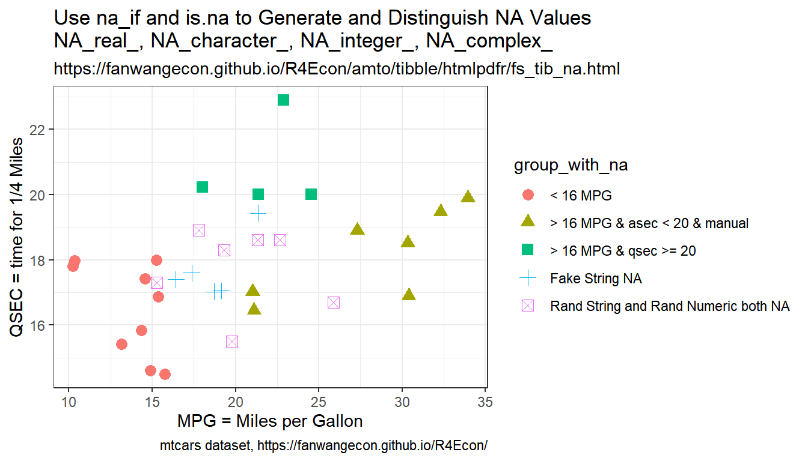

Chapter 2 Summarize Data
2.1 Counting Observation
2.1.1 Uncount
Go back to fan’s REconTools Package, R4Econ Repository (bookdown site), or Intro Stats with R Repository.
In some panel, there are \(N\) individuals, each observed for \(Y_i\) years. Given a dataset with two variables, the individual index, and the \(Y_i\) variable, expand the dataframe so that there is a row for each individual index’s each unique year in the survey.
Search:
- r duplicate row by variable
Links:
Algorithm:
- generate testing frame, the individual attribute dataset with invariant information over panel
- uncount, duplicate rows by years in survey
- group and generate sorted index
- add indiviual specific stat year to index
# 1. Array of Years in the Survey
ar_years_in_survey <- c(2,3,1,10,2,5)
ar_start_yaer <- c(1,2,3,1,1,1)
ar_end_year <- c(2,4,3,10,2,5)
mt_combine <- cbind(ar_years_in_survey, ar_start_yaer, ar_end_year)
# This is the individual attribute dataset, attributes that are invariant acrosss years
tb_indi_attributes <- as_tibble(mt_combine) %>% rowid_to_column(var = "ID")
# 2. Sort and generate variable equal to sorted index
tb_indi_panel <- tb_indi_attributes %>% uncount(ar_years_in_survey)
# 3. Panel now construct exactly which year in survey, note that all needed is sort index
# Note sorting not needed, all rows identical now
tb_indi_panel <- tb_indi_panel %>%
group_by(ID) %>%
mutate(yr_in_survey = row_number())
tb_indi_panel <- tb_indi_panel %>%
mutate(calendar_year = yr_in_survey + ar_start_yaer - 1)
# Show results Head 10
tb_indi_panel %>% head(10) %>%
kable() %>%
kable_styling_fc()| ID | ar_start_yaer | ar_end_year | yr_in_survey | calendar_year |
|---|---|---|---|---|
| 1 | 1 | 2 | 1 | 1 |
| 1 | 1 | 2 | 2 | 2 |
| 2 | 2 | 4 | 1 | 2 |
| 2 | 2 | 4 | 2 | 3 |
| 2 | 2 | 4 | 3 | 4 |
| 3 | 3 | 3 | 1 | 3 |
| 4 | 1 | 10 | 1 | 1 |
| 4 | 1 | 10 | 2 | 2 |
| 4 | 1 | 10 | 3 | 3 |
| 4 | 1 | 10 | 4 | 4 |
2.2 Sorting, Indexing, Slicing
2.2.1 Sorting
Go back to fan’s REconTools Package, R4Econ Repository (bookdown site), or Intro Stats with R Repository.
2.2.1.1 Generate Sorted Index within Group with Repeating Values
There is a variable, sort by this variable, then generate index from 1 to N representing sorted values of this index. If there are repeating values, still assign index, different index each value.
- r generate index sort
- dplyr mutate equals index
# Sort and generate variable equal to sorted index
df_iris <- iris %>% arrange(Sepal.Length) %>%
mutate(Sepal.Len.Index = row_number()) %>%
select(Sepal.Length, Sepal.Len.Index, everything())
# Show results Head 10
df_iris %>% head(10) %>%
kable() %>%
kable_styling_fc_wide()| Sepal.Length | Sepal.Len.Index | Sepal.Width | Petal.Length | Petal.Width | Species |
|---|---|---|---|---|---|
| 4.3 | 1 | 3.0 | 1.1 | 0.1 | setosa |
| 4.4 | 2 | 2.9 | 1.4 | 0.2 | setosa |
| 4.4 | 3 | 3.0 | 1.3 | 0.2 | setosa |
| 4.4 | 4 | 3.2 | 1.3 | 0.2 | setosa |
| 4.5 | 5 | 2.3 | 1.3 | 0.3 | setosa |
| 4.6 | 6 | 3.1 | 1.5 | 0.2 | setosa |
| 4.6 | 7 | 3.4 | 1.4 | 0.3 | setosa |
| 4.6 | 8 | 3.6 | 1.0 | 0.2 | setosa |
| 4.6 | 9 | 3.2 | 1.4 | 0.2 | setosa |
| 4.7 | 10 | 3.2 | 1.3 | 0.2 | setosa |
2.2.1.2 Populate Value from Lowest Index to All other Rows
We would like to calculate for example the ratio of each individual’s highest to the the person with the lowest height in a dataset. We first need to generated sorted index from lowest to highest, and then populate the lowest height to all rows, and then divide.
Search Terms:
- r spread value to all rows from one row
- r other rows equal to the value of one row
- Conditional assignment of one variable to the value of one of two other variables
- dplyr mutate conditional
- dplyr value from one row to all rows
- dplyr mutate equal to value in another cell
Links:
2.2.1.2.1 Short Method: mutate and min
We just want the lowest value to be in its own column, so that we can compute various statistics using the lowest value variable and the original variable.
# 1. Sort
df_iris_m1 <- iris %>% mutate(Sepal.Len.Lowest.all = min(Sepal.Length)) %>%
select(Sepal.Length, Sepal.Len.Lowest.all, everything())
# Show results Head 10
df_iris_m1 %>% head(10) %>%
kable() %>%
kable_styling_fc_wide()| Sepal.Length | Sepal.Len.Lowest.all | Sepal.Width | Petal.Length | Petal.Width | Species |
|---|---|---|---|---|---|
| 5.1 | 4.3 | 3.5 | 1.4 | 0.2 | setosa |
| 4.9 | 4.3 | 3.0 | 1.4 | 0.2 | setosa |
| 4.7 | 4.3 | 3.2 | 1.3 | 0.2 | setosa |
| 4.6 | 4.3 | 3.1 | 1.5 | 0.2 | setosa |
| 5.0 | 4.3 | 3.6 | 1.4 | 0.2 | setosa |
| 5.4 | 4.3 | 3.9 | 1.7 | 0.4 | setosa |
| 4.6 | 4.3 | 3.4 | 1.4 | 0.3 | setosa |
| 5.0 | 4.3 | 3.4 | 1.5 | 0.2 | setosa |
| 4.4 | 4.3 | 2.9 | 1.4 | 0.2 | setosa |
| 4.9 | 4.3 | 3.1 | 1.5 | 0.1 | setosa |
2.2.1.2.2 Long Method: row_number and case_when
This is the long method, using row_number, and case_when. The benefit of this method is that it generates several intermediate variables that might be useful. And the key final step is to set a new variable (A=Sepal.Len.Lowest.all) equal to another variable’s (B=Sepal.Length’s) value at the index that satisfies condition based a third variable (C=Sepal.Len.Index).
# 1. Sort
# 2. generate index
# 3. value at lowest index (case_when)
# 4. spread value from lowest index to other rows
# Note step 4 does not require step 3
df_iris_m2 <- iris %>% arrange(Sepal.Length) %>%
mutate(Sepal.Len.Index = row_number()) %>%
mutate(Sepal.Len.Lowest.one =
case_when(row_number()==1 ~ Sepal.Length)) %>%
mutate(Sepal.Len.Lowest.all =
Sepal.Length[Sepal.Len.Index==1]) %>%
select(Sepal.Length, Sepal.Len.Index,
Sepal.Len.Lowest.one, Sepal.Len.Lowest.all)
# Show results Head 10
df_iris_m2 %>% head(10) %>%
kable() %>%
kable_styling_fc_wide()| Sepal.Length | Sepal.Len.Index | Sepal.Len.Lowest.one | Sepal.Len.Lowest.all |
|---|---|---|---|
| 4.3 | 1 | 4.3 | 4.3 |
| 4.4 | 2 | NA | 4.3 |
| 4.4 | 3 | NA | 4.3 |
| 4.4 | 4 | NA | 4.3 |
| 4.5 | 5 | NA | 4.3 |
| 4.6 | 6 | NA | 4.3 |
| 4.6 | 7 | NA | 4.3 |
| 4.6 | 8 | NA | 4.3 |
| 4.6 | 9 | NA | 4.3 |
| 4.7 | 10 | NA | 4.3 |
2.2.1.3 Generate Sorted Index based on Deviations
Generate Positive and Negative Index based on Ordered Deviation from some Number.
There is a variable that is continuous, substract a number from this variable, and generate index based on deviations. Think of the index as generating intervals indicating where the value lies. 0th index indicates the largest value in sequence that is smaller than or equal to number \(x\), 1st index indicates the smallest value in sequence that is larger than number \(x\).
The solution below is a little bit convoluated and long, there is likely a much quicker way. The process below shows various intermediary outputs that help arrive at deviation index Sepal.Len.Devi.Index from initial sorted index Sepal.Len.Index.
search:
- dplyr arrange ignore na
- dplyr index deviation from order number sequence
- dplyr index below above
- dplyr index order below above value
# 1. Sort and generate variable equal to sorted index
# 2. Plus or minus deviations from some value
# 3. Find the zero, which means, the number closests to zero including zero from the negative side
# 4. Find the index at the highest zero and below deviation point
# 5. Difference of zero index and original sorted index
sc_val_x <- 4.65
df_iris_deviate <- iris %>% arrange(Sepal.Length) %>%
mutate(Sepal.Len.Index = row_number()) %>%
mutate(Sepal.Len.Devi = (Sepal.Length - sc_val_x)) %>%
mutate(Sepal.Len.Devi.Neg =
case_when(Sepal.Len.Devi <= 0 ~ (-1)*(Sepal.Len.Devi))) %>%
arrange((Sepal.Len.Devi.Neg), desc(Sepal.Len.Index)) %>%
mutate(Sepal.Len.Index.Zero =
case_when(row_number() == 1 ~ Sepal.Len.Index)) %>%
mutate(Sepal.Len.Devi.Index =
Sepal.Len.Index - Sepal.Len.Index.Zero[row_number() == 1]) %>%
arrange(Sepal.Len.Index) %>%
select(Sepal.Length, Sepal.Len.Index, Sepal.Len.Devi,
Sepal.Len.Devi.Neg, Sepal.Len.Index.Zero, Sepal.Len.Devi.Index)
# Show results Head 10
df_iris_deviate %>% head(20) %>%
kable() %>%
kable_styling_fc_wide()| Sepal.Length | Sepal.Len.Index | Sepal.Len.Devi | Sepal.Len.Devi.Neg | Sepal.Len.Index.Zero | Sepal.Len.Devi.Index |
|---|---|---|---|---|---|
| 4.3 | 1 | -0.35 | 0.35 | NA | -8 |
| 4.4 | 2 | -0.25 | 0.25 | NA | -7 |
| 4.4 | 3 | -0.25 | 0.25 | NA | -6 |
| 4.4 | 4 | -0.25 | 0.25 | NA | -5 |
| 4.5 | 5 | -0.15 | 0.15 | NA | -4 |
| 4.6 | 6 | -0.05 | 0.05 | NA | -3 |
| 4.6 | 7 | -0.05 | 0.05 | NA | -2 |
| 4.6 | 8 | -0.05 | 0.05 | NA | -1 |
| 4.6 | 9 | -0.05 | 0.05 | 9 | 0 |
| 4.7 | 10 | 0.05 | NA | NA | 1 |
| 4.7 | 11 | 0.05 | NA | NA | 2 |
| 4.8 | 12 | 0.15 | NA | NA | 3 |
| 4.8 | 13 | 0.15 | NA | NA | 4 |
| 4.8 | 14 | 0.15 | NA | NA | 5 |
| 4.8 | 15 | 0.15 | NA | NA | 6 |
| 4.8 | 16 | 0.15 | NA | NA | 7 |
| 4.9 | 17 | 0.25 | NA | NA | 8 |
| 4.9 | 18 | 0.25 | NA | NA | 9 |
| 4.9 | 19 | 0.25 | NA | NA | 10 |
| 4.9 | 20 | 0.25 | NA | NA | 11 |
2.3 Group Statistics
2.3.1 Groups Statistics
Go back to fan’s REconTools Package, R4Econ Repository (bookdown site), or Intro Stats with R Repository.
2.3.1.1 Aggrgate Groups only Unique Group and Count
There are two variables that are numeric, we want to find all the unique groups of these two variables in a dataset and count how many times each unique group occurs
- r unique occurrence of numeric groups
- How to add count of unique values by group to R data.frame
# Numeric value combinations unique Groups
vars.group <- c('hgt0', 'wgt0')
# dataset subsetting
df_use <- df_hgt_wgt %>% select(!!!syms(c(vars.group))) %>%
mutate(hgt0 = round(hgt0/5)*5, wgt0 = round(wgt0/2000)*2000) %>%
drop_na()
# Group, count and generate means for each numeric variables
# mutate_at(vars.group, funs(as.factor(.))) %>%
df.group.count <- df_use %>% group_by(!!!syms(vars.group)) %>%
arrange(!!!syms(vars.group)) %>%
summarise(n_obs_group=n())
# Show results Head 10
df.group.count %>% kable() %>% kable_styling_fc()| hgt0 | wgt0 | n_obs_group |
|---|---|---|
| 40 | 2000 | 122 |
| 45 | 2000 | 4586 |
| 45 | 4000 | 470 |
| 50 | 2000 | 9691 |
| 50 | 4000 | 13106 |
| 55 | 2000 | 126 |
| 55 | 4000 | 1900 |
| 60 | 6000 | 18 |
2.3.1.2 Aggrgate Groups only Unique Group Show up With Means
Several variables that are grouping identifiers. Several variables that are values which mean be unique for each group members. For example, a Panel of income for N households over T years with also household education information that is invariant over time. Want to generate a dataset where the unit of observation are households, rather than household years. Take average of all numeric variables that are household and year specific.
A complicating factor potentially is that the number of observations differ within group, for example, income might be observed for all years for some households but not for other households.
- r dplyr aggregate group average
- Aggregating and analyzing data with dplyr
- column can’t be modified because it is a grouping variable
- see also: Aggregating and analyzing data with dplyr
# In the df_hgt_wgt from R4Econ, there is a country id, village id,
# and individual id, and various other statistics
vars.group <- c('S.country', 'vil.id', 'indi.id')
vars.values <- c('hgt', 'momEdu')
# dataset subsetting
df_use <- df_hgt_wgt %>% select(!!!syms(c(vars.group, vars.values)))
# Group, count and generate means for each numeric variables
df.group <- df_use %>% group_by(!!!syms(vars.group)) %>%
arrange(!!!syms(vars.group)) %>%
summarise_if(is.numeric,
funs(mean = mean(., na.rm = TRUE),
sd = sd(., na.rm = TRUE),
n = sum(is.na(.)==0)))
# Show results Head 10
df.group %>% head(10) %>%
kable() %>%
kable_styling_fc_wide()| S.country | vil.id | indi.id | hgt_mean | momEdu_mean | hgt_sd | momEdu_sd | hgt_n | momEdu_n |
|---|---|---|---|---|---|---|---|---|
| Cebu | 1 | 1 | 61.80000 | 5.3 | 9.520504 | 0 | 7 | 18 |
| Cebu | 1 | 2 | 68.86154 | 7.1 | 9.058931 | 0 | 13 | 18 |
| Cebu | 1 | 3 | 80.45882 | 9.4 | 29.894231 | 0 | 17 | 18 |
| Cebu | 1 | 4 | 88.10000 | 13.9 | 35.533166 | 0 | 18 | 18 |
| Cebu | 1 | 5 | 97.70556 | 11.3 | 41.090366 | 0 | 18 | 18 |
| Cebu | 1 | 6 | 87.49444 | 7.3 | 35.586439 | 0 | 18 | 18 |
| Cebu | 1 | 7 | 90.79412 | 10.4 | 38.722385 | 0 | 17 | 18 |
| Cebu | 1 | 8 | 68.45385 | 13.5 | 10.011961 | 0 | 13 | 18 |
| Cebu | 1 | 9 | 86.21111 | 10.4 | 35.126057 | 0 | 18 | 18 |
| Cebu | 1 | 10 | 87.67222 | 10.5 | 36.508127 | 0 | 18 | 18 |
| S.country | vil.id | indi.id | hgt_mean | momEdu_mean | hgt_sd | momEdu_sd | hgt_n | momEdu_n |
|---|---|---|---|---|---|---|---|---|
| Guatemala | 14 | 2014 | 66.97000 | NaN | 8.967974 | NaN | 10 | 0 |
| Guatemala | 14 | 2015 | 71.71818 | NaN | 11.399984 | NaN | 11 | 0 |
| Guatemala | 14 | 2016 | 66.33000 | NaN | 9.490352 | NaN | 10 | 0 |
| Guatemala | 14 | 2017 | 76.40769 | NaN | 14.827871 | NaN | 13 | 0 |
| Guatemala | 14 | 2018 | 74.55385 | NaN | 12.707846 | NaN | 13 | 0 |
| Guatemala | 14 | 2019 | 70.47500 | NaN | 11.797390 | NaN | 12 | 0 |
| Guatemala | 14 | 2020 | 60.28750 | NaN | 7.060036 | NaN | 8 | 0 |
| Guatemala | 14 | 2021 | 84.96000 | NaN | 15.446193 | NaN | 10 | 0 |
| Guatemala | 14 | 2022 | 79.38667 | NaN | 15.824749 | NaN | 15 | 0 |
| Guatemala | 14 | 2023 | 66.50000 | NaN | 8.613113 | NaN | 8 | 0 |
2.3.2 One Variable Group Summary
Go back to fan’s REconTools Package, R4Econ Repository (bookdown site), or Intro Stats with R Repository.
There is a categorical variable (based on one or the interaction of multiple variables), there is a continuous variable, obtain statistics for the continuous variable conditional on the categorical variable, but also unconditionally.
Store results in a matrix, but also flatten results wide to row with appropriate keys/variable-names for all group statistics.
Pick which statistics to be included in final wide row
2.3.2.1 Build Program
# Single Variable Group Statistics (also generate overall statistics)
ff_summ_by_group_summ_one <- function(
df, vars.group, var.numeric, str.stats.group = 'main',
str.stats.specify = NULL, boo.overall.stats = TRUE){
# List of statistics
# https://rdrr.io/cran/dplyr/man/summarise.html
strs.center <- c('mean', 'median')
strs.spread <- c('sd', 'IQR', 'mad')
strs.range <- c('min', 'max')
strs.pos <- c('first', 'last')
strs.count <- c('n_distinct')
# Grouping of Statistics
if (missing(str.stats.specify)) {
if (str.stats.group == 'main') {
strs.all <- c('mean', 'min', 'max', 'sd')
}
if (str.stats.group == 'all') {
strs.all <- c(strs.center, strs.spread, strs.range, strs.pos, strs.count)
}
} else {
strs.all <- str.stats.specify
}
# Start Transform
df <- df %>% drop_na() %>% mutate(!!(var.numeric) := as.numeric(!!sym(var.numeric)))
# Overall Statistics
if (boo.overall.stats) {
df.overall.stats <- df %>% summarize_at(vars(var.numeric), funs(!!!strs.all))
if (length(strs.all) == 1) {
# give it a name, otherwise if only one stat, name of stat not saved
df.overall.stats <- df.overall.stats %>% rename(!!strs.all := !!sym(var.numeric))
}
names(df.overall.stats) <- paste0(var.numeric, '.', names(df.overall.stats))
}
# Group Sort
df.select <- df %>%
group_by(!!!syms(vars.group)) %>%
arrange(!!!syms(c(vars.group, var.numeric)))
# Table of Statistics
df.table.grp.stats <- df.select %>% summarize_at(vars(var.numeric), funs(!!!strs.all))
# Add Stat Name
if (length(strs.all) == 1) {
# give it a name, otherwise if only one stat, name of stat not saved
df.table.grp.stats <- df.table.grp.stats %>% rename(!!strs.all := !!sym(var.numeric))
}
# Row of Statistics
str.vars.group.combine <- paste0(vars.group, collapse='_')
if (length(vars.group) == 1) {
df.row.grp.stats <- df.table.grp.stats %>%
mutate(!!(str.vars.group.combine) := paste0(var.numeric, '.',
vars.group, '.g',
(!!!syms(vars.group)))) %>%
gather(variable, value, -one_of(vars.group)) %>%
unite(str.vars.group.combine, c(str.vars.group.combine, 'variable')) %>%
spread(str.vars.group.combine, value)
} else {
df.row.grp.stats <- df.table.grp.stats %>%
mutate(vars.groups.combine := paste0(paste0(vars.group, collapse='.')),
!!(str.vars.group.combine) := paste0(interaction(!!!(syms(vars.group))))) %>%
mutate(!!(str.vars.group.combine) := paste0(var.numeric, '.', vars.groups.combine, '.',
(!!sym(str.vars.group.combine)))) %>%
ungroup() %>%
select(-vars.groups.combine, -one_of(vars.group)) %>%
gather(variable, value, -one_of(str.vars.group.combine)) %>%
unite(str.vars.group.combine, c(str.vars.group.combine, 'variable')) %>%
spread(str.vars.group.combine, value)
}
# Clean up name strings
names(df.table.grp.stats) <-
gsub(x = names(df.table.grp.stats),pattern = "_", replacement = "\\.")
names(df.row.grp.stats) <-
gsub(x = names(df.row.grp.stats),pattern = "_", replacement = "\\.")
# Return
list.return <-
list(df_table_grp_stats = df.table.grp.stats, df_row_grp_stats = df.row.grp.stats)
# Overall Statistics, without grouping
if (boo.overall.stats) {
df.row.stats.all <- c(df.row.grp.stats, df.overall.stats)
list.return <- append(list.return, list(df_overall_stats = df.overall.stats,
df_row_stats_all = df.row.stats.all))
}
# Return
return(list.return)
}2.3.2.2 Test
Load data and test
# Library
library(tidyverse)
# Load Sample Data
setwd('C:/Users/fan/R4Econ/_data/')
df <- read_csv('height_weight.csv')## Parsed with column specification:
## cols(
## S.country = col_character(),
## vil.id = col_double(),
## indi.id = col_double(),
## sex = col_character(),
## svymthRound = col_double(),
## momEdu = col_double(),
## wealthIdx = col_double(),
## hgt = col_double(),
## wgt = col_double(),
## hgt0 = col_double(),
## wgt0 = col_double(),
## prot = col_double(),
## cal = col_double(),
## p.A.prot = col_double(),
## p.A.nProt = col_double()
## )2.3.2.2.1 Function Testing By Gender Groups
Need two variables, a group variable that is a factor, and a numeric
Main Statistics:
# Single Variable Group Statistics
ff_summ_by_group_summ_one(
df.select, vars.group = vars.group, var.numeric = var.numeric,
str.stats.group = 'main')## $df_table_grp_stats
## # A tibble: 2 x 5
## sex mean min max sd
## <chr> <dbl> <dbl> <dbl> <dbl>
## 1 Female 82.8 41.2 171. 29.8
## 2 Male 84.7 41.3 183. 31.8
##
## $df_row_grp_stats
## # A tibble: 1 x 8
## hgt.sex.gFemale.max hgt.sex.gFemale.mean hgt.sex.gFemale.min hgt.sex.gFemale.sd hgt.sex.gMale.max hgt.sex.gMale.mean hgt.sex.gMale.min hgt.sex.gMale.sd
## <dbl> <dbl> <dbl> <dbl> <dbl> <dbl> <dbl> <dbl>
## 1 171. 82.8 41.2 29.8 183. 84.7 41.3 31.8
##
## $df_overall_stats
## # A tibble: 1 x 4
## hgt.mean hgt.min hgt.max hgt.sd
## <dbl> <dbl> <dbl> <dbl>
## 1 83.8 41.2 183. 30.9
##
## $df_row_stats_all
## $df_row_stats_all$hgt.sex.gFemale.max
## [1] 170.6
##
## $df_row_stats_all$hgt.sex.gFemale.mean
## [1] 82.81198
##
## $df_row_stats_all$hgt.sex.gFemale.min
## [1] 41.2
##
## $df_row_stats_all$hgt.sex.gFemale.sd
## [1] 29.79351
##
## $df_row_stats_all$hgt.sex.gMale.max
## [1] 182.9
##
## $df_row_stats_all$hgt.sex.gMale.mean
## [1] 84.68152
##
## $df_row_stats_all$hgt.sex.gMale.min
## [1] 41.3
##
## $df_row_stats_all$hgt.sex.gMale.sd
## [1] 31.75037
##
## $df_row_stats_all$hgt.mean
## [1] 83.80921
##
## $df_row_stats_all$hgt.min
## [1] 41.2
##
## $df_row_stats_all$hgt.max
## [1] 182.9
##
## $df_row_stats_all$hgt.sd
## [1] 30.86631Specify Two Specific Statistics:
ff_summ_by_group_summ_one(
df.select, vars.group = vars.group, var.numeric = var.numeric,
str.stats.specify = c('mean', 'sd'))## $df_table_grp_stats
## # A tibble: 2 x 3
## sex mean sd
## <chr> <dbl> <dbl>
## 1 Female 82.8 29.8
## 2 Male 84.7 31.8
##
## $df_row_grp_stats
## # A tibble: 1 x 4
## hgt.sex.gFemale.mean hgt.sex.gFemale.sd hgt.sex.gMale.mean hgt.sex.gMale.sd
## <dbl> <dbl> <dbl> <dbl>
## 1 82.8 29.8 84.7 31.8
##
## $df_overall_stats
## # A tibble: 1 x 2
## hgt.mean hgt.sd
## <dbl> <dbl>
## 1 83.8 30.9
##
## $df_row_stats_all
## $df_row_stats_all$hgt.sex.gFemale.mean
## [1] 82.81198
##
## $df_row_stats_all$hgt.sex.gFemale.sd
## [1] 29.79351
##
## $df_row_stats_all$hgt.sex.gMale.mean
## [1] 84.68152
##
## $df_row_stats_all$hgt.sex.gMale.sd
## [1] 31.75037
##
## $df_row_stats_all$hgt.mean
## [1] 83.80921
##
## $df_row_stats_all$hgt.sd
## [1] 30.86631Specify One Specific Statistics:
ff_summ_by_group_summ_one(
df.select, vars.group = vars.group, var.numeric = var.numeric,
str.stats.specify = c('mean'))## $df_table_grp_stats
## # A tibble: 2 x 2
## sex mean
## <chr> <dbl>
## 1 Female 82.8
## 2 Male 84.7
##
## $df_row_grp_stats
## # A tibble: 1 x 2
## hgt.sex.gFemale.mean hgt.sex.gMale.mean
## <dbl> <dbl>
## 1 82.8 84.7
##
## $df_overall_stats
## # A tibble: 1 x 1
## hgt.mean
## <dbl>
## 1 83.8
##
## $df_row_stats_all
## $df_row_stats_all$hgt.sex.gFemale.mean
## [1] 82.81198
##
## $df_row_stats_all$hgt.sex.gMale.mean
## [1] 84.68152
##
## $df_row_stats_all$hgt.mean
## [1] 83.809212.3.2.2.2 Function Testing By Country and Gender Groups
Need two variables, a group variable that is a factor, and a numeric. Now joint grouping variables.
Main Statistics:
ff_summ_by_group_summ_one(
df.select, vars.group = vars.group, var.numeric = var.numeric,
str.stats.group = 'main')## $df_table_grp_stats
## # A tibble: 4 x 6
## # Groups: S.country [2]
## S.country sex mean min max sd
## <chr> <chr> <dbl> <dbl> <dbl> <dbl>
## 1 Cebu Female 84.6 41.3 171. 32.5
## 2 Cebu Male 87.0 41.3 183. 35.0
## 3 Guatemala Female 76.6 41.2 120. 15.7
## 4 Guatemala Male 77.0 41.5 125. 15.1
##
## $df_row_grp_stats
## # A tibble: 1 x 16
## hgt.S.country.s~ hgt.S.country.s~ hgt.S.country.s~ hgt.S.country.s~ hgt.S.country.s~ hgt.S.country.s~ hgt.S.country.s~ hgt.S.country.s~ hgt.S.country.s~
## <dbl> <dbl> <dbl> <dbl> <dbl> <dbl> <dbl> <dbl> <dbl>
## 1 171. 84.6 41.3 32.5 183. 87.0 41.3 35.0 120.
## # ... with 7 more variables: hgt.S.country.sex.Guatemala.Female.mean <dbl>, hgt.S.country.sex.Guatemala.Female.min <dbl>,
## # hgt.S.country.sex.Guatemala.Female.sd <dbl>, hgt.S.country.sex.Guatemala.Male.max <dbl>, hgt.S.country.sex.Guatemala.Male.mean <dbl>,
## # hgt.S.country.sex.Guatemala.Male.min <dbl>, hgt.S.country.sex.Guatemala.Male.sd <dbl>
##
## $df_overall_stats
## # A tibble: 1 x 4
## hgt.mean hgt.min hgt.max hgt.sd
## <dbl> <dbl> <dbl> <dbl>
## 1 83.8 41.2 183. 30.9
##
## $df_row_stats_all
## $df_row_stats_all$hgt.S.country.sex.Cebu.Female.max
## [1] 170.6
##
## $df_row_stats_all$hgt.S.country.sex.Cebu.Female.mean
## [1] 84.61326
##
## $df_row_stats_all$hgt.S.country.sex.Cebu.Female.min
## [1] 41.3
##
## $df_row_stats_all$hgt.S.country.sex.Cebu.Female.sd
## [1] 32.53651
##
## $df_row_stats_all$hgt.S.country.sex.Cebu.Male.max
## [1] 182.9
##
## $df_row_stats_all$hgt.S.country.sex.Cebu.Male.mean
## [1] 87.02836
##
## $df_row_stats_all$hgt.S.country.sex.Cebu.Male.min
## [1] 41.3
##
## $df_row_stats_all$hgt.S.country.sex.Cebu.Male.sd
## [1] 34.9909
##
## $df_row_stats_all$hgt.S.country.sex.Guatemala.Female.max
## [1] 119.9
##
## $df_row_stats_all$hgt.S.country.sex.Guatemala.Female.mean
## [1] 76.58771
##
## $df_row_stats_all$hgt.S.country.sex.Guatemala.Female.min
## [1] 41.2
##
## $df_row_stats_all$hgt.S.country.sex.Guatemala.Female.sd
## [1] 15.71801
##
## $df_row_stats_all$hgt.S.country.sex.Guatemala.Male.max
## [1] 124.7
##
## $df_row_stats_all$hgt.S.country.sex.Guatemala.Male.mean
## [1] 77.0471
##
## $df_row_stats_all$hgt.S.country.sex.Guatemala.Male.min
## [1] 41.5
##
## $df_row_stats_all$hgt.S.country.sex.Guatemala.Male.sd
## [1] 15.11444
##
## $df_row_stats_all$hgt.mean
## [1] 83.80921
##
## $df_row_stats_all$hgt.min
## [1] 41.2
##
## $df_row_stats_all$hgt.max
## [1] 182.9
##
## $df_row_stats_all$hgt.sd
## [1] 30.86631Specify Two Specific Statistics:
ff_summ_by_group_summ_one(
df.select, vars.group = vars.group, var.numeric = var.numeric,
str.stats.specify = c('mean', 'sd'))## $df_table_grp_stats
## # A tibble: 4 x 4
## # Groups: S.country [2]
## S.country sex mean sd
## <chr> <chr> <dbl> <dbl>
## 1 Cebu Female 84.6 32.5
## 2 Cebu Male 87.0 35.0
## 3 Guatemala Female 76.6 15.7
## 4 Guatemala Male 77.0 15.1
##
## $df_row_grp_stats
## # A tibble: 1 x 8
## hgt.S.country.sex.~ hgt.S.country.sex.~ hgt.S.country.sex.~ hgt.S.country.sex~ hgt.S.country.sex~ hgt.S.country.sex~ hgt.S.country.sex~ hgt.S.country.sex~
## <dbl> <dbl> <dbl> <dbl> <dbl> <dbl> <dbl> <dbl>
## 1 84.6 32.5 87.0 35.0 76.6 15.7 77.0 15.1
##
## $df_overall_stats
## # A tibble: 1 x 2
## hgt.mean hgt.sd
## <dbl> <dbl>
## 1 83.8 30.9
##
## $df_row_stats_all
## $df_row_stats_all$hgt.S.country.sex.Cebu.Female.mean
## [1] 84.61326
##
## $df_row_stats_all$hgt.S.country.sex.Cebu.Female.sd
## [1] 32.53651
##
## $df_row_stats_all$hgt.S.country.sex.Cebu.Male.mean
## [1] 87.02836
##
## $df_row_stats_all$hgt.S.country.sex.Cebu.Male.sd
## [1] 34.9909
##
## $df_row_stats_all$hgt.S.country.sex.Guatemala.Female.mean
## [1] 76.58771
##
## $df_row_stats_all$hgt.S.country.sex.Guatemala.Female.sd
## [1] 15.71801
##
## $df_row_stats_all$hgt.S.country.sex.Guatemala.Male.mean
## [1] 77.0471
##
## $df_row_stats_all$hgt.S.country.sex.Guatemala.Male.sd
## [1] 15.11444
##
## $df_row_stats_all$hgt.mean
## [1] 83.80921
##
## $df_row_stats_all$hgt.sd
## [1] 30.86631Specify One Specific Statistics:
ff_summ_by_group_summ_one(
df.select, vars.group = vars.group, var.numeric = var.numeric, str.stats.specify = c('mean'))## $df_table_grp_stats
## # A tibble: 4 x 3
## # Groups: S.country [2]
## S.country sex mean
## <chr> <chr> <dbl>
## 1 Cebu Female 84.6
## 2 Cebu Male 87.0
## 3 Guatemala Female 76.6
## 4 Guatemala Male 77.0
##
## $df_row_grp_stats
## # A tibble: 1 x 4
## hgt.S.country.sex.Cebu.Female.mean hgt.S.country.sex.Cebu.Male.mean hgt.S.country.sex.Guatemala.Female.mean hgt.S.country.sex.Guatemala.Male.mean
## <dbl> <dbl> <dbl> <dbl>
## 1 84.6 87.0 76.6 77.0
##
## $df_overall_stats
## # A tibble: 1 x 1
## hgt.mean
## <dbl>
## 1 83.8
##
## $df_row_stats_all
## $df_row_stats_all$hgt.S.country.sex.Cebu.Female.mean
## [1] 84.61326
##
## $df_row_stats_all$hgt.S.country.sex.Cebu.Male.mean
## [1] 87.02836
##
## $df_row_stats_all$hgt.S.country.sex.Guatemala.Female.mean
## [1] 76.58771
##
## $df_row_stats_all$hgt.S.country.sex.Guatemala.Male.mean
## [1] 77.0471
##
## $df_row_stats_all$hgt.mean
## [1] 83.809212.3.3 Nested within Group Stats
Go back to fan’s REconTools Package, R4Econ Repository (bookdown site), or Intro Stats with R Repository.
By Multiple within Individual Groups Variables, Averages for All Numeric Variables within All Groups of All Group Variables (Long to very Wide). Suppose you have an individual level final outcome. The individual is observed for N periods, where each period the inputs differ. What inputs impacted the final outcome?
Suppose we can divide N periods in which the individual is in the data into a number of years, a number of semi-years, a number of quarters, or uneven-staggered lengths. We might want to generate averages across individuals and within each of these different possible groups averages of inputs.
Then we want to version of the data where each row is an individual, one of the variables is the final outcome, and the other variables are these different averages: averages for the 1st, 2nd, 3rd year in which indivdiual is in data, averages for 1st, …, final quarter in which indivdiual is in data.
2.3.3.1 Build Function
This function takes as inputs:
- vars.not.groups2avg: a list of variables that are not the within-indivdiual or across-individual grouping variables, but the variables we want to average over. Withnin indivdiual grouping averages will be calculated for these variables using the not-listed variables as within indivdiual groups (excluding vars.indi.grp groups).
- vars.indi.grp: a list or individual variables, and also perhaps villages, province, etc id variables that are higher than individual ID. Note the groups are are ACROSS individual higher level group variables.
- the remaining variables are all within individual grouping variables.
the function output is a dataframe:
- each row is an individual
- initial variables individual ID and across individual groups from vars.indi.grp.
- other variables are all averages for the variables in vars.not.groups2avg
- if there are 2 within individual group variables, and the first has 3 groups (years), the second has 6 groups (semi-years), then there would be 9 average variables.
- each average variables has the original variable name from vars.not.groups2avg plus the name of the within individual grouping variable, and at the end ‘c_x’, where x is a integer representing the category within the group (if 3 years, x=1, 2, 3)
# Data Function
# https://fanwangecon.github.io/R4Econ/summarize/summ/ByGroupsSummWide.html
f.by.groups.summ.wide <- function(df.groups.to.average,
vars.not.groups2avg,
vars.indi.grp = c('S.country','ID'),
display=TRUE) {
# 1. generate categoricals for full year (m.12), half year (m.6), quarter year (m.4)
# 2. generate categoricals also for uneven years (m12t14) using stagger (+2 rather than -1)
# 3. reshape wide to long, so that all categorical date groups appear in var=value,
# and categories in var=variable
# 4. calculate mean for all numeric variables for all date groups
# 5. combine date categorical variable and value, single var:
# m.12.c1= first year average from m.12 averaging
######## ######## ######## ######## #######
# Step 1
######## ######## ######## ######## #######
# 1. generate categoricals for full year (m.12), half year (m.6), quarter year (m.4)
# 2. generate categoricals also for uneven years (m12t14) using stagger (+2 rather than -1)
######## ######## ######## ######## #######
# S2: reshape wide to long, so that all categorical date groups appear in var=value,
# and categories in var=variable; calculate mean for all numeric variables for all date groups
######## ######## ######## ######## #######
df.avg.long <- df.groups.to.average %>%
gather(variable, value, -one_of(c(vars.indi.grp,
vars.not.groups2avg))) %>%
group_by(!!!syms(vars.indi.grp), variable, value) %>%
summarise_if(is.numeric, funs(mean(., na.rm = TRUE)))
if (display){
dim(df.avg.long)
options(repr.matrix.max.rows=10, repr.matrix.max.cols=20)
print(df.avg.long)
}
######## ######## ######## ######## #######
# S3 combine date categorical variable and value, single var:
# m.12.c1= first year average from m.12 averaging; to do this make data even longer first
######## ######## ######## ######## #######
# We already have the averages, but we want them to show up as variables,
# mean for each group of each variable.
df.avg.allvars.wide <- df.avg.long %>%
ungroup() %>%
mutate(all_m_cate = paste0(variable, '_c', value)) %>%
select(all_m_cate, everything(), -variable, -value) %>%
gather(variable, value, -one_of(vars.indi.grp), -all_m_cate) %>%
unite('var_mcate', variable, all_m_cate) %>%
spread(var_mcate, value)
if (display){
dim(df.avg.allvars.wide)
options(repr.matrix.max.rows=10, repr.matrix.max.cols=10)
print(df.avg.allvars.wide)
}
return(df.avg.allvars.wide)
}2.3.3.2 Test Program
In our sample dataset, the number of nutrition/height/income etc information observed within each country and month of age group are different. We have a panel dataset for children observed over different months of age.
We have two key grouping variables: 1. country: data are observed for guatemala and cebu 2. month-age (survey month round=svymthRound): different months of age at which each individual child is observed
A child could be observed for many months, or just a few months. A child’s height information could be observed for more months-of-age than nutritional intake information. We eventually want to run regressions where the outcome is height/weight and the input is nutrition. The regressions will be at the month-of-age level. We need to know how many times different variables are observed at the month-of-age level.
# Library
library(tidyverse)
# Load Sample Data
setwd('C:/Users/fan/R4Econ/_data/')
df <- read_csv('height_weight.csv')## Parsed with column specification:
## cols(
## S.country = col_character(),
## vil.id = col_double(),
## indi.id = col_double(),
## sex = col_character(),
## svymthRound = col_double(),
## momEdu = col_double(),
## wealthIdx = col_double(),
## hgt = col_double(),
## wgt = col_double(),
## hgt0 = col_double(),
## wgt0 = col_double(),
## prot = col_double(),
## cal = col_double(),
## p.A.prot = col_double(),
## p.A.nProt = col_double()
## )2.3.3.2.1 Generate Within Individual Groups
In the data, children are observed for different number of months since birth. We want to calculate quarterly, semi-year, annual, etc average nutritional intakes. First generate these within-individual grouping variables. We can also generate uneven-staggered calendar groups as shown below.
mth.var <- 'svymthRound'
df.groups.to.average<- df %>%
filter(!!sym(mth.var) >= 0 & !!sym(mth.var) <= 24) %>%
mutate(m12t24=(floor((!!sym(mth.var) - 12) %/% 14) + 1),
m8t24=(floor((!!sym(mth.var) - 8) %/% 18) + 1),
m12 = pmax((floor((!!sym(mth.var)-1) %/% 12) + 1), 1),
m6 = pmax((floor((!!sym(mth.var)-1) %/% 6) + 1), 1),
m3 = pmax((floor((!!sym(mth.var)-1) %/% 3) + 1), 1))# Show Results
options(repr.matrix.max.rows=30, repr.matrix.max.cols=20)
vars.arrange <- c('S.country','indi.id','svymthRound')
vars.groups.within.indi <- c('m12t24', 'm8t24', 'm12', 'm6', 'm3')
as.tibble(df.groups.to.average %>%
group_by(!!!syms(vars.arrange)) %>%
arrange(!!!syms(vars.arrange)) %>%
select(!!!syms(vars.arrange), !!!syms(vars.groups.within.indi)))## # A tibble: 23,603 x 8
## S.country indi.id svymthRound m12t24 m8t24 m12 m6 m3
## <chr> <dbl> <dbl> <dbl> <dbl> <dbl> <dbl> <dbl>
## 1 Cebu 1 0 0 0 1 1 1
## 2 Cebu 1 2 0 0 1 1 1
## 3 Cebu 1 4 0 0 1 1 2
## 4 Cebu 1 6 0 0 1 1 2
## 5 Cebu 1 8 0 1 1 2 3
## 6 Cebu 1 10 0 1 1 2 4
## 7 Cebu 1 12 1 1 1 2 4
## 8 Cebu 1 14 1 1 2 3 5
## 9 Cebu 1 16 1 1 2 3 6
## 10 Cebu 1 18 1 1 2 3 6
## # ... with 23,593 more rows2.3.3.2.2 Within Group Averages
With the within-group averages created, we can generate averages for all variables within these groups.
vars.not.groups2avg <- c('prot', 'cal')
vars.indi.grp <- c('S.country', 'indi.id')
vars.groups.within.indi <- c('m12t24', 'm8t24', 'm12', 'm6', 'm3')
df.groups.to.average.select <- df.groups.to.average %>%
select(one_of(c(vars.indi.grp,
vars.not.groups2avg,
vars.groups.within.indi)))
df.avg.allvars.wide <- f.by.groups.summ.wide(df.groups.to.average.select,
vars.not.groups2avg,
vars.indi.grp, display=TRUE)## # A tibble: 36,414 x 6
## # Groups: S.country, indi.id, variable [10,115]
## S.country indi.id variable value prot cal
## <chr> <dbl> <chr> <dbl> <dbl> <dbl>
## 1 Cebu 1 m12 1 5.36 132.
## 2 Cebu 1 m12 2 NaN NaN
## 3 Cebu 1 m12t24 0 4.37 97.1
## 4 Cebu 1 m12t24 1 11.3 343.
## 5 Cebu 1 m3 1 0.65 9.1
## 6 Cebu 1 m3 2 3.65 95.5
## 7 Cebu 1 m3 3 2.6 85.3
## 8 Cebu 1 m3 4 13.2 315.
## 9 Cebu 1 m3 5 NaN NaN
## 10 Cebu 1 m3 6 NaN NaN
## # ... with 36,404 more rows
## # A tibble: 2,023 x 38
## S.country indi.id cal_m12_c1 cal_m12_c2 cal_m12t24_c0 cal_m12t24_c1 cal_m3_c1 cal_m3_c2 cal_m3_c3 cal_m3_c4 cal_m3_c5 cal_m3_c6 cal_m3_c7 cal_m3_c8
## <chr> <dbl> <dbl> <dbl> <dbl> <dbl> <dbl> <dbl> <dbl> <dbl> <dbl> <dbl> <dbl> <dbl>
## 1 Cebu 1 132. NaN 97.1 343. 9.1 95.5 85.3 315. NaN NaN NaN NaN
## 2 Cebu 2 90.7 256. 81.5 240. 83.4 12.3 155. 144. 228 153. 305 348.
## 3 Cebu 3 96.8 659. 31.6 634. 0.5 28.8 57 281. 459. 550. 612 891.
## 4 Cebu 4 27.5 372. 24.6 325. 4.5 26.0 39.4 46.0 221. 271 581. 443.
## 5 Cebu 5 101. 1081. 79.2 960. 14.1 144. 71.3 161. 453. 1345. 1178. 1082
## 6 Cebu 6 185. 522. 162. 493. 23.8 185. 169. 356. 653. 506. 417. 523
## 7 Cebu 7 157. 571. 146. 514. 8.3 138. 408. 200. 391. 637. 688. 570.
## 8 Cebu 8 472. 845. 379. 871. 159. 423 418. 861. 691. 898. 637. 972.
## 9 Cebu 9 32.3 415. 16.6 374. 5.05 10.4 15.1 90.0 142. 204. 753. 594.
## 10 Cebu 10 67.2 395. 68.6 347. 9.55 26.4 165. 117. 297. 303 385. 542.
## # ... with 2,013 more rows, and 24 more variables: cal_m6_c1 <dbl>, cal_m6_c2 <dbl>, cal_m6_c3 <dbl>, cal_m6_c4 <dbl>, cal_m8t24_c0 <dbl>,
## # cal_m8t24_c1 <dbl>, prot_m12_c1 <dbl>, prot_m12_c2 <dbl>, prot_m12t24_c0 <dbl>, prot_m12t24_c1 <dbl>, prot_m3_c1 <dbl>, prot_m3_c2 <dbl>,
## # prot_m3_c3 <dbl>, prot_m3_c4 <dbl>, prot_m3_c5 <dbl>, prot_m3_c6 <dbl>, prot_m3_c7 <dbl>, prot_m3_c8 <dbl>, prot_m6_c1 <dbl>, prot_m6_c2 <dbl>,
## # prot_m6_c3 <dbl>, prot_m6_c4 <dbl>, prot_m8t24_c0 <dbl>, prot_m8t24_c1 <dbl>This is the tabular version of results
## [1] 2023 38## [1] "S.country" "indi.id" "cal_m12_c1" "cal_m12_c2" "cal_m12t24_c0" "cal_m12t24_c1" "cal_m3_c1" "cal_m3_c2"
## [9] "cal_m3_c3" "cal_m3_c4" "cal_m3_c5" "cal_m3_c6" "cal_m3_c7" "cal_m3_c8" "cal_m6_c1" "cal_m6_c2"
## [17] "cal_m6_c3" "cal_m6_c4" "cal_m8t24_c0" "cal_m8t24_c1" "prot_m12_c1" "prot_m12_c2" "prot_m12t24_c0" "prot_m12t24_c1"
## [25] "prot_m3_c1" "prot_m3_c2" "prot_m3_c3" "prot_m3_c4" "prot_m3_c5" "prot_m3_c6" "prot_m3_c7" "prot_m3_c8"
## [33] "prot_m6_c1" "prot_m6_c2" "prot_m6_c3" "prot_m6_c4" "prot_m8t24_c0" "prot_m8t24_c1"## # A tibble: 2,023 x 38
## S.country indi.id cal_m12_c1 cal_m12_c2 cal_m12t24_c0 cal_m12t24_c1 cal_m3_c1 cal_m3_c2 cal_m3_c3 cal_m3_c4 cal_m3_c5 cal_m3_c6 cal_m3_c7 cal_m3_c8
## <chr> <dbl> <dbl> <dbl> <dbl> <dbl> <dbl> <dbl> <dbl> <dbl> <dbl> <dbl> <dbl> <dbl>
## 1 Cebu 1 132. NaN 97.1 343. 9.1 95.5 85.3 315. NaN NaN NaN NaN
## 2 Cebu 2 90.7 256. 81.5 240. 83.4 12.3 155. 144. 228 153. 305 348.
## 3 Cebu 3 96.8 659. 31.6 634. 0.5 28.8 57 281. 459. 550. 612 891.
## 4 Cebu 4 27.5 372. 24.6 325. 4.5 26.0 39.4 46.0 221. 271 581. 443.
## 5 Cebu 5 101. 1081. 79.2 960. 14.1 144. 71.3 161. 453. 1345. 1178. 1082
## 6 Cebu 6 185. 522. 162. 493. 23.8 185. 169. 356. 653. 506. 417. 523
## 7 Cebu 7 157. 571. 146. 514. 8.3 138. 408. 200. 391. 637. 688. 570.
## 8 Cebu 8 472. 845. 379. 871. 159. 423 418. 861. 691. 898. 637. 972.
## 9 Cebu 9 32.3 415. 16.6 374. 5.05 10.4 15.1 90.0 142. 204. 753. 594.
## 10 Cebu 10 67.2 395. 68.6 347. 9.55 26.4 165. 117. 297. 303 385. 542.
## # ... with 2,013 more rows, and 24 more variables: cal_m6_c1 <dbl>, cal_m6_c2 <dbl>, cal_m6_c3 <dbl>, cal_m6_c4 <dbl>, cal_m8t24_c0 <dbl>,
## # cal_m8t24_c1 <dbl>, prot_m12_c1 <dbl>, prot_m12_c2 <dbl>, prot_m12t24_c0 <dbl>, prot_m12t24_c1 <dbl>, prot_m3_c1 <dbl>, prot_m3_c2 <dbl>,
## # prot_m3_c3 <dbl>, prot_m3_c4 <dbl>, prot_m3_c5 <dbl>, prot_m3_c6 <dbl>, prot_m3_c7 <dbl>, prot_m3_c8 <dbl>, prot_m6_c1 <dbl>, prot_m6_c2 <dbl>,
## # prot_m6_c3 <dbl>, prot_m6_c4 <dbl>, prot_m8t24_c0 <dbl>, prot_m8t24_c1 <dbl>2.4 Distributional Statistics
2.4.1 Histogram
2.4.1.1 Generate Test Score Dataset
Go back to fan’s REconTools Package, R4Econ Repository (bookdown site), or Intro Stats with R Repository.
- r generate text string as csv
- r tibble matrix hand input
First, we will generate a test score dataset, directly from string. Below we type line by line a dataset with four variables in comma separated (csv) format, where the first row includes the variables names. These texts could be stored in a separate file, or they could be directly included in code and read in as csv
2.4.1.1.1 A Dataset with only Two Continuous Variable
ar_test_scores_ec3 <- c(107.72,101.28,105.92,109.31,104.27,110.27,91.92846154,81.8,109.0071429,103.07,98.97923077,101.91,96.49,97.79923077,99.07846154,99.17,103.51,112.2225,101.2964286,94.5,98.92,97.09,93.83989011,97.36304945,80.34,65.74,85.275,82.19708791,86.53758242,86.2025,86.63,82.57392857,83.66,79.76,75.55642857,86.32571429,66.41,76.06,44.225,82.28,47.77392857,70.005,69.13769231,73.52571429,60.51,56.04)
ar_test_scores_ec1 <- c(101.72,101.28,99.92,103.31,100.27,104.27,90.23615385,77.8,103.4357143,97.07,93.13307692,95.91,92.49,93.95307692,95.38615385,97.17,99.51,100.3475,95.83214286,92.5,94.92,91.09,90.4332967,93.52101648,80.34,59.74,79.525,77.67236264,81.59252747,82.3275,80.63,76.98464286,81.66,79.76,70.59214286,82.46857143,66.41,74.06,40.475,76.28,44.18464286,66.255,65.59923077,69.66857143,60.51,56.04)
mt_test_scores <- cbind(ar_test_scores_ec1, ar_test_scores_ec3)
ar_st_varnames <- c('course_total_ec1p','course_total_ec3p')
tb_final_twovar <- as_tibble(mt_test_scores) %>% rename_all(~c(ar_st_varnames))
summary(tb_final_twovar)## course_total_ec1p course_total_ec3p
## Min. : 40.48 Min. : 44.23
## 1st Qu.: 76.46 1st Qu.: 79.91
## Median : 86.35 Median : 89.28
## Mean : 83.88 Mean : 87.90
## 3rd Qu.: 95.89 3rd Qu.:100.75
## Max. :104.27 Max. :112.22## # A tibble: 17 x 3
## stats course.total.ec1p course.total.ec3p
## <chr> <chr> <chr>
## 1 n 46 46
## 2 NAobs 0 0
## 3 ZEROobs 0 0
## 4 mean 83.87572 87.90239
## 5 sd 15.87272 16.76041
## 6 cv 0.1892409 0.1906706
## 7 min 40.475 44.225
## 8 p01 42.14434 45.82202
## 9 p05 56.9650 57.1575
## 10 p10 63.05462 66.07500
## 11 p25 76.45616 79.90500
## 12 p50 86.35236 89.27923
## 13 p75 " 95.89054" 100.75250
## 14 p90 100.8137 106.8200
## 15 p95 102.9125 109.2343
## 16 p99 103.8946 111.3439
## 17 max 104.2700 112.22252.4.1.1.2 A Dataset with one Continuous Variable and Histogram
ar_final_scores <- c(94.28442509,95.68817475,97.25219512,77.89268293,95.08795497,93.27380863,92.3,84.25317073,86.08642991,84.69219512,71.43634146,76.21365854,71.68878049,77.46142589,79.29579268,43.7285453,63.80634146,67.92994774,100.8980488,100.0857143,99.93073171,98.4102439,97.93,97.10359756,96.97121951,96.60292683,96.23317073,93.92243902,93.82243902,92.75390244,92.65775261,92.20444653,91.73463415,90.38321161,89.37414634,86.95932458,79.58686411,78.70878049,77.2497561,76.88195122,76.52987805,74.72114313,74.27488676,71.30268293,63.70256098,37.90426829,2.292682927)
mt_test_scores <- cbind(seq(1,length(ar_final_scores)), ar_final_scores)
ar_st_varnames <- c('index', 'course_final')
tb_onevar <- as_tibble(mt_test_scores) %>% rename_all(~c(ar_st_varnames))
summary(tb_onevar)## index course_final
## Min. : 1.0 Min. : 2.293
## 1st Qu.:12.5 1st Qu.: 76.372
## Median :24.0 Median : 86.959
## Mean :24.0 Mean : 82.415
## 3rd Qu.:35.5 3rd Qu.: 94.686
## Max. :47.0 Max. :100.898## # A tibble: 17 x 3
## stats course.final index
## <chr> <chr> <chr>
## 1 n 47 47
## 2 NAobs 0 0
## 3 ZEROobs 0 0
## 4 mean 82.41501 24.00000
## 5 sd 18.35476 13.71131
## 6 cv 0.2227113 0.5713046
## 7 min 2.292683 1.000000
## 8 p01 18.67401 " 1.46000"
## 9 p05 49.72075 " 3.30000"
## 10 p10 66.28051 " 5.60000"
## 11 p25 76.37177 12.50000
## 12 p50 86.95932 24.00000
## 13 p75 94.68619 35.50000
## 14 p90 97.52332 42.40000
## 15 p95 99.47459 44.70000
## 16 p99 100.5244 " 46.5400"
## 17 max 100.898 " 47.000"2.4.1.1.3 A Dataset with Multiple Variables
#load in data empirically by hand
txt_test_data <- "init_prof, later_prof, class_id, exam_score
'SW', 'SW', 1, 102
'SW', 'SW', 1, 102
'SW', 'SW', 1, 101
'SW', 'SW', 1, 100
'SW', 'SW', 1, 100
'SW', 'SW', 1, 99
'SW', 'SW', 1, 98.5
'SW', 'SW', 1, 98.5
'SW', 'SW', 1, 97
'SW', 'SW', 1, 95
'SW', 'SW', 1, 94
'SW', 'SW', 1, 91
'SW', 'SW', 1, 91
'SW', 'SW', 1, 90
'SW', 'SW', 1, 89
'SW', 'SW', 1, 88.5
'SW', 'SW', 1, 88
'SW', 'SW', 1, 87
'SW', 'SW', 1, 87
'SW', 'SW', 1, 87
'SW', 'SW', 1, 86
'SW', 'SW', 1, 86
'SW', 'SW', 1, 84
'SW', 'SW', 1, 82
'SW', 'SW', 1, 78.5
'SW', 'SW', 1, 76
'SW', 'SW', 1, 72
'SW', 'SW', 1, 70.5
'SW', 'SW', 1, 67.5
'SW', 'SW', 1, 67.5
'SW', 'SW', 1, 67
'SW', 'SW', 1, 63.5
'SW', 'SW', 1, 60
'SW', 'SW', 1, 59
'SW', 'SW', 1, 44.5
'SW', 'SW', 1, 44
'SW', 'SW', 1, 42.5
'SW', 'SW', 1, 40.5
'SW', 'SW', 1, 40.5
'SW', 'SW', 1, 36.5
'SW', 'SW', 1, 35.5
'SW', 'SW', 1, 21.5
'SW', 'SW', 1, 4
'MP', 'MP', 2, 105
'MP', 'MP', 2, 103
'MP', 'MP', 2, 102
'MP', 'MP', 2, 101
'MP', 'MP', 2, 101
'MP', 'MP', 2, 100.5
'MP', 'MP', 2, 100
'MP', 'MP', 2, 99
'MP', 'MP', 2, 97
'MP', 'MP', 2, 97
'MP', 'MP', 2, 97
'MP', 'MP', 2, 97
'MP', 'MP', 2, 96
'MP', 'MP', 2, 95
'MP', 'MP', 2, 91
'MP', 'MP', 2, 89
'MP', 'MP', 2, 85
'MP', 'MP', 2, 84
'MP', 'MP', 2, 84
'MP', 'MP', 2, 84
'MP', 'MP', 2, 83.5
'MP', 'MP', 2, 82.5
'MP', 'MP', 2, 81.5
'MP', 'MP', 2, 80.5
'MP', 'MP', 2, 80
'MP', 'MP', 2, 77
'MP', 'MP', 2, 77
'MP', 'MP', 2, 75
'MP', 'MP', 2, 75
'MP', 'MP', 2, 71
'MP', 'MP', 2, 70
'MP', 'MP', 2, 68
'MP', 'MP', 2, 63
'MP', 'MP', 2, 56
'MP', 'MP', 2, 56
'MP', 'MP', 2, 55.5
'MP', 'MP', 2, 49.5
'MP', 'MP', 2, 48.5
'MP', 'MP', 2, 47.5
'MP', 'MP', 2, 44.5
'MP', 'MP', 2, 34.5
'MP', 'MP', 2, 29.5
'CA', 'MP', 3, 103
'CA', 'MP', 3, 103
'CA', 'MP', 3, 101
'CA', 'MP', 3, 96.5
'CA', 'MP', 3, 93.5
'CA', 'MP', 3, 93
'CA', 'MP', 3, 93
'CA', 'MP', 3, 92
'CA', 'MP', 3, 90
'CA', 'MP', 3, 90
'CA', 'MP', 3, 89
'CA', 'MP', 3, 86.5
'CA', 'MP', 3, 84.5
'CA', 'MP', 3, 83
'CA', 'MP', 3, 83
'CA', 'MP', 3, 82
'CA', 'MP', 3, 78
'CA', 'MP', 3, 75
'CA', 'MP', 3, 74.5
'CA', 'MP', 3, 70
'CA', 'MP', 3, 54.5
'CA', 'MP', 3, 52
'CA', 'MP', 3, 50
'CA', 'MP', 3, 42
'CA', 'MP', 3, 36.5
'CA', 'MP', 3, 28
'CA', 'MP', 3, 26
'CA', 'MP', 3, 11
'CA', 'SN', 4, 103
'CA', 'SN', 4, 103
'CA', 'SN', 4, 102
'CA', 'SN', 4, 102
'CA', 'SN', 4, 101
'CA', 'SN', 4, 100
'CA', 'SN', 4, 98
'CA', 'SN', 4, 98
'CA', 'SN', 4, 98
'CA', 'SN', 4, 95
'CA', 'SN', 4, 95
'CA', 'SN', 4, 92.5
'CA', 'SN', 4, 92
'CA', 'SN', 4, 91
'CA', 'SN', 4, 90
'CA', 'SN', 4, 85.5
'CA', 'SN', 4, 84
'CA', 'SN', 4, 82.5
'CA', 'SN', 4, 81
'CA', 'SN', 4, 77.5
'CA', 'SN', 4, 77
'CA', 'SN', 4, 72
'CA', 'SN', 4, 71.5
'CA', 'SN', 4, 69
'CA', 'SN', 4, 68.5
'CA', 'SN', 4, 68
'CA', 'SN', 4, 67
'CA', 'SN', 4, 65.5
'CA', 'SN', 4, 62.5
'CA', 'SN', 4, 62
'CA', 'SN', 4, 61.5
'CA', 'SN', 4, 61
'CA', 'SN', 4, 57.5
'CA', 'SN', 4, 54
'CA', 'SN', 4, 52.5
'CA', 'SN', 4, 51
'CA', 'SN', 4, 50.5
'CA', 'SN', 4, 50
'CA', 'SN', 4, 49
'CA', 'SN', 4, 43
'CA', 'SN', 4, 39.5
'CA', 'SN', 4, 32.5
'CA', 'SN', 4, 25.5
'CA', 'SN', 4, 18"
csv_test_data = read.csv(text=txt_test_data, header=TRUE)
ar_st_varnames <- c('first_half_professor', 'second_half_professor', 'course_id', 'exam_score')
tb_test_data <- as_tibble(csv_test_data) %>% rename_all(~c(ar_st_varnames))
summary(tb_test_data)## first_half_professor second_half_professor course_id exam_score
## 'CA':72 'MP':70 Min. :1.000 Min. : 4.00
## 'MP':42 'SN':44 1st Qu.:1.000 1st Qu.: 60.00
## 'SW':43 'SW':43 Median :2.000 Median : 82.00
## Mean :2.465 Mean : 75.08
## 3rd Qu.:4.000 3rd Qu.: 94.00
## Max. :4.000 Max. :105.002.4.1.2 Test Score Distributions
2.4.1.2.1 Histogram
ggplot(tb_final_twovar, aes(x=ar_test_scores_ec3)) +
geom_histogram(bins=25) +
labs(title = paste0('Sandbox: Final Distribution (Econ 2370, FW)'),
caption = 'FW Section, formula: 0.3*exam1Perc + 0.3*exam2Perc + 0.42*HWtotalPerc + 0.03*AttendancePerc \n+ perfect attendance + 0.03 per Extra Credit') +
theme_bw()
ggplot(tb_test_data, aes(x=exam_score)) +
geom_histogram(bins=16) +
labs(title = paste0('Exam Distribution'),
caption = 'All Sections') +
theme_bw()
2.4.2 Joint Quantiles from Continuous
Go back to fan’s REconTools Package, R4Econ Repository (bookdown site), or Intro Stats with R Repository.
There are multiple or a single continuous variables. Find which quantile each observation belongs to for each of the variables. Then also generate a joint/interaction variable of all combinations of quantiles from different variables.
The program has these features:
- Quantiles breaks are generated based on group_by characteristics, meaning quantiles for individual level characteristics when data is panel
- Quantiles variables apply to full panel at within-group observation levels.
- Robust to non-unique breaks for quantiles (non-unique grouped together)
- Quantile categories have detailed labeling (specifying which non-unique groupings belong to quantile)
When joining multiple quantile variables together:
- First check if only calculate quantiles at observations where all quantile base variables are not null
- Calculate Quantiles for each variable, with different quantile levels for sub-groups of variables
- Summary statistics by mulltiple quantile-categorical variables, summary
2.4.2.1 Build Program
2.4.2.1.1 Support Functions
# Quantiles for any variable
gen_quantiles <- function(var, df, prob=c(0.25, 0.50, 0.75)) {
enframe(quantile(as.numeric(df[[var]]), prob, na.rm=TRUE), 'quant.perc', var)
}
# Support Functions for Variable Suffix
f_Q_suffix <- function(seq.quantiles) {
quantile.suffix <- paste0('Qs', min(seq.quantiles),
'e', max(seq.quantiles),
'n', (length(seq.quantiles)-1))
}
# Support Functions for Quantile Labeling
f_Q_label <- function(arr.quantiles,
arr.sort.unique.quantile,
seq.quantiles) {
paste0('(',
paste0(which(arr.quantiles %in% arr.sort.unique.quantile), collapse=','),
') of ', f_Q_suffix(seq.quantiles))
}
# Generate New Variable Names with Quantile Suffix
f_var_rename <- function(name, seq.quantiles) {
quantile.suffix <- paste0('_', f_Q_suffix(seq.quantiles))
return(sub('_q', quantile.suffix, name))
}
# Check Are Values within Group By Unique? If not, STOP
f_check_distinct_ingroup <- function(df, vars.group_by, vars.values_in_group) {
df.uniqus.in.group <- df %>% group_by(!!!syms(vars.group_by)) %>%
mutate(quant_vars_paste = paste(!!!(syms(vars.values_in_group)), sep='-')) %>%
mutate(unique_in_group = n_distinct(quant_vars_paste)) %>%
slice(1L) %>%
ungroup() %>%
group_by(unique_in_group) %>%
summarise(n=n())
if (sum(df.uniqus.in.group$unique_in_group) > 1) {
print(df.uniqus.in.group)
print(paste('vars.values_in_group', vars.values_in_group, sep=':'))
print(paste('vars.group_by', vars.group_by, sep=':'))
stop("The variables for which quantiles are to be taken are not identical within the group variables")
}
}2.4.2.1.2 Data Slicing and Quantile Generation
- Function 1: generate quantiles based on group-specific characteristics. the groups could be at the panel observation level as well.
# First Step, given groups, generate quantiles based on group characteristics
# vars.cts2quantile <- c('wealthIdx', 'hgt0', 'wgt0')
# seq.quantiles <- c(0, 0.3333, 0.6666, 1.0)
# vars.group_by <- c('indi.id')
# vars.arrange <- c('indi.id', 'svymthRound')
# vars.continuous <- c('wealthIdx', 'hgt0', 'wgt0')
df_sliced_quantiles <- function(df, vars.cts2quantile, seq.quantiles,
vars.group_by, vars.arrange) {
# Slicing data
df.grp.L1 <- df %>% group_by(!!!syms(vars.group_by)) %>% arrange(!!!syms(vars.arrange)) %>% slice(1L) %>% ungroup()
# Quantiles based on sliced data
df.sliced.quantiles <- lapply(vars.cts2quantile, gen_quantiles, df=df.grp.L1, prob=seq.quantiles) %>% reduce(full_join)
return(list(df.sliced.quantiles=df.sliced.quantiles,
df.grp.L1=df.grp.L1))
}2.4.2.1.3 Data Cutting
- Function 2: cut groups for full panel dataframe based on group-specific characteristics quantiles.
# Cutting Function, Cut Continuous Variables into Quantiles with labeing
f_cut <- function(var, df.sliced.quantiles, seq.quantiles, include.lowest=TRUE, fan.labels=TRUE, print=FALSE) {
# unparsed string variable name
var.str <- substitute(var)
# Breaks
arr.quantiles <- df.sliced.quantiles[[var.str]]
arr.sort.unique.quantiles <- sort(unique(arr.quantiles))
if (print) {
print(arr.sort.unique.quantiles)
}
# Regular cutting With Standard Labels
# TRUE, means the lowest group has closed bracket left and right
var.quantile <- cut(var, breaks=arr.sort.unique.quantiles, include.lowest=include.lowest)
# Use my custom labels
if (fan.labels) {
levels.suffix <- lapply(arr.sort.unique.quantiles[1:(length(arr.sort.unique.quantiles)-1)],
f_Q_label,
arr.quantiles=arr.quantiles,
seq.quantiles=seq.quantiles)
if (print) {
print(levels.suffix)
}
levels(var.quantile) <- paste0(levels(var.quantile), '; ', levels.suffix)
}
# Return
return(var.quantile)
}# Combo Quantile Function
# vars.cts2quantile <- c('wealthIdx', 'hgt0', 'wgt0')
# seq.quantiles <- c(0, 0.3333, 0.6666, 1.0)
# vars.group_by <- c('indi.id')
# vars.arrange <- c('indi.id', 'svymthRound')
# vars.continuous <- c('wealthIdx', 'hgt0', 'wgt0')
df_cut_by_sliced_quantiles <- function(df, vars.cts2quantile, seq.quantiles,
vars.group_by, vars.arrange) {
# Check Are Values within Group By Unique? If not, STOP
f_check_distinct_ingroup(df, vars.group_by, vars.values_in_group=vars.cts2quantile)
# First Step Slicing
df.sliced <- df_sliced_quantiles(df, vars.cts2quantile, seq.quantiles, vars.group_by, vars.arrange)
# Second Step Generate Categorical Variables of Quantiles
df.with.cut.quant <- df %>% mutate_at(vars.cts2quantile,
funs(q=f_cut(., df.sliced$df.sliced.quantiles,
seq.quantiles=seq.quantiles,
include.lowest=TRUE, fan.labels=TRUE)))
if (length(vars.cts2quantile) > 1) {
df.with.cut.quant <- df.with.cut.quant %>%
rename_at(vars(contains('_q')),
funs(f_var_rename(., seq.quantiles=seq.quantiles)))
} else {
new.var.name <- paste0(vars.cts2quantile[1], '_', f_Q_suffix(seq.quantiles))
df.with.cut.quant <- df.with.cut.quant %>% rename(!!new.var.name := q)
}
# Newly Generated Quantile-Cut Variables
vars.quantile.cut <- df.with.cut.quant %>%
select(matches(paste0(vars.cts2quantile, collapse='|'))) %>%
select(matches(f_Q_suffix(seq.quantiles)))
# Return
return(list(df.with.cut.quant = df.with.cut.quant,
df.sliced.quantiles=df.sliced$df.sliced.quantiles,
df.grp.L1=df.sliced$df.grp.L1,
vars.quantile.cut=vars.quantile.cut))
}2.4.2.1.4 Different Vars Different Probabilities Joint Quantiles
- Accomondate multiple continuousv ariables
- Different percentiles
- list of lists
- generate joint categorical variables
- keep only values that exist for all quantile base vars
# Function to handle list inputs with different quantiles vars and probabilities
df_cut_by_sliced_quantiles_grps <- function(quantile.grp.list, df, vars.group_by, vars.arrange) {
vars.cts2quantile <- quantile.grp.list$vars
seq.quantiles <- quantile.grp.list$prob
return(df_cut_by_sliced_quantiles(df, vars.cts2quantile, seq.quantiles, vars.group_by, vars.arrange))
}
# Show Results
df_cut_by_sliced_quantiles_joint_results_grped <- function(df.with.cut.quant.all, vars.cts2quantile, vars.group_by, vars.arrange,
vars.quantile.cut.all, var.qjnt.grp.idx) {
# Show ALL
df.group.panel.cnt.mean <- df.with.cut.quant.all %>% group_by(!!!syms(vars.quantile.cut.all), !!sym(var.qjnt.grp.idx)) %>%
summarise_at(vars.cts2quantile, funs(mean, n()))
# Show Based on SLicing first
df.group.slice1.cnt.mean <- df.with.cut.quant.all %>% group_by(!!!syms(vars.group_by)) %>% arrange(!!!syms(vars.arrange)) %>% slice(1L) %>%
group_by(!!!syms(vars.quantile.cut.all), !!sym(var.qjnt.grp.idx)) %>%
summarise_at(vars.cts2quantile, funs(mean, n()))
return(list(df.group.panel.cnt.mean=df.group.panel.cnt.mean,
df.group.slice1.cnt.mean=df.group.slice1.cnt.mean))
}# # Joint Quantile Group Name
# var.qjnt.grp.idx <- 'group.index'
# # Generate Categorical Variables of Quantiles
# vars.group_by <- c('indi.id')
# vars.arrange <- c('indi.id', 'svymthRound')
# # Quantile Variables and Quantiles
# vars.cts2quantile.wealth <- c('wealthIdx')
# seq.quantiles.wealth <- c(0, .5, 1.0)
# vars.cts2quantile.wgthgt <- c('hgt0', 'wgt0')
# seq.quantiles.wgthgt <- c(0, .3333, 0.6666, 1.0)
# drop.any.quantile.na <- TRUE
# # collect to list
# list.cts2quantile <- list(list(vars=vars.cts2quantile.wealth,
# prob=seq.quantiles.wealth),
# list(vars=vars.cts2quantile.wgthgt,
# prob=seq.quantiles.wgthgt))
df_cut_by_sliced_quantiles_joint <- function(df, var.qjnt.grp.idx,
list.cts2quantile,
vars.group_by, vars.arrange,
drop.any.quantile.na = TRUE,
toprint = TRUE) {
# Original dimensions
if(toprint) {
print(dim(df))
}
# All Continuous Variables from lists
vars.cts2quantile <- unlist(lapply(list.cts2quantile, function(elist) elist$vars))
vars.cts2quantile
# Keep only if not NA for all Quantile variables
if (drop.any.quantile.na) {
df.select <- df %>% drop_na(c(vars.group_by, vars.arrange, vars.cts2quantile))
} else {
df.select <- df
}
if(toprint) {
print(dim(df.select))
}
# Apply qunatile function to all elements of list of list
df.cut.list <- lapply(list.cts2quantile, df_cut_by_sliced_quantiles_grps,
df=df.select, vars.group_by=vars.group_by, vars.arrange=vars.arrange)
# Reduce Resulting Core Panel Matrix Together
df.with.cut.quant.all <- lapply(df.cut.list, function(elist) elist$df.with.cut.quant) %>% reduce(left_join)
df.sliced.quantiles.all <- lapply(df.cut.list, function(elist) elist$df.sliced.quantiles)
if(toprint) {
print(dim(df.with.cut.quant.all))
}
# Obrain Newly Created Quantile Group Variables
vars.quantile.cut.all <- unlist(lapply(df.cut.list, function(elist) names(elist$vars.quantile.cut)))
if(toprint) {
print(vars.quantile.cut.all)
print(summary(df.with.cut.quant.all %>% select(one_of(vars.quantile.cut.all))))
}
# Generate Joint Quantile Index Variable
df.with.cut.quant.all <- df.with.cut.quant.all %>% mutate(!!var.qjnt.grp.idx := group_indices(., !!!syms(vars.quantile.cut.all)))
# Quantile Groups
arr.group.idx <- t(sort(unique(df.with.cut.quant.all[[var.qjnt.grp.idx]])))
# Results Display
df.group.print <- df_cut_by_sliced_quantiles_joint_results_grped(df.with.cut.quant.all, vars.cts2quantile,
vars.group_by, vars.arrange,
vars.quantile.cut.all, var.qjnt.grp.idx)
# list to Return
# These returns are the same as returns earlier: df_cut_by_sliced_quantiles
# Except that they are combined together
return(list(df.with.cut.quant = df.with.cut.quant.all,
df.sliced.quantiles = df.sliced.quantiles.all,
df.grp.L1 = (df.cut.list[[1]])$df.grp.L1,
vars.quantile.cut = vars.quantile.cut.all,
df.group.panel.cnt.mean = df.group.print$df.group.panel.cnt.mean,
df.group.slice1.cnt.mean = df.group.print$df.group.slice1.cnt.mean))
}2.4.2.2 Program Testing
Load Data
# Library
library(tidyverse)
# Load Sample Data
setwd('C:/Users/fan/R4Econ/_data/')
df <- read_csv('height_weight.csv')## Parsed with column specification:
## cols(
## S.country = col_character(),
## vil.id = col_double(),
## indi.id = col_double(),
## sex = col_character(),
## svymthRound = col_double(),
## momEdu = col_double(),
## wealthIdx = col_double(),
## hgt = col_double(),
## wgt = col_double(),
## hgt0 = col_double(),
## wgt0 = col_double(),
## prot = col_double(),
## cal = col_double(),
## p.A.prot = col_double(),
## p.A.nProt = col_double()
## )2.4.2.2.1 Hgt0 3 Groups
# Joint Quantile Group Name
var.qjnt.grp.idx <- 'group.index'
list.cts2quantile <- list(list(vars=c('hgt0'), prob=c(0, .3333, 0.6666, 1.0)))
results <- df_cut_by_sliced_quantiles_joint(df, var.qjnt.grp.idx, list.cts2quantile,
vars.group_by = c('indi.id'), vars.arrange = c('indi.id', 'svymthRound'),
drop.any.quantile.na = TRUE, toprint = FALSE)
# Show Results
results$df.group.slice1.cnt.mean## # A tibble: 3 x 4
## # Groups: hgt0_Qs0e1n3 [3]
## hgt0_Qs0e1n3 group.index mean n
## <fct> <int> <dbl> <int>
## 1 [40.6,48.5]; (1) of Qs0e1n3 1 47.0 580
## 2 (48.5,50.2]; (2) of Qs0e1n3 2 49.4 561
## 3 (50.2,58]; (3) of Qs0e1n3 3 51.7 5682.4.2.2.2 Wealth 5 Groups Guatemala
# Joint Quantile Group Name
var.qjnt.grp.idx <- 'wltQuintle.index'
list.cts2quantile <- list(list(vars=c('wealthIdx'), prob=seq(0, 1.0, 0.20)))
results <- df_cut_by_sliced_quantiles_joint((df %>% filter(S.country == 'Guatemala')),
var.qjnt.grp.idx, list.cts2quantile,
vars.group_by = c('indi.id'), vars.arrange = c('indi.id', 'svymthRound'),
drop.any.quantile.na = TRUE, toprint = FALSE)
# Show Results
results$df.group.slice1.cnt.mean## # A tibble: 5 x 4
## # Groups: wealthIdx_Qs0e1n5 [5]
## wealthIdx_Qs0e1n5 wltQuintle.index mean n
## <fct> <int> <dbl> <int>
## 1 [1,1.6]; (1) of Qs0e1n5 1 1.25 151
## 2 (1.6,2.1]; (2) of Qs0e1n5 2 1.82 139
## 3 (2.1,2.3]; (3) of Qs0e1n5 3 2.25 139
## 4 (2.3,2.9]; (4) of Qs0e1n5 4 2.70 134
## 5 (2.9,6.6]; (5) of Qs0e1n5 5 3.77 1112.4.2.2.3 Hgt0 2 groups, Wgt0 2 groups too
# Joint Quantile Group Name
var.qjnt.grp.idx <- 'group.index'
list.cts2quantile <- list(list(vars=c('hgt0', 'wgt0'), prob=c(0, .5, 1.0)))
results <- df_cut_by_sliced_quantiles_joint(df, var.qjnt.grp.idx, list.cts2quantile,
vars.group_by = c('indi.id'), vars.arrange = c('indi.id', 'svymthRound'),
drop.any.quantile.na = TRUE, toprint = FALSE)## Joining, by = "quant.perc"## # A tibble: 4 x 7
## # Groups: hgt0_Qs0e1n2, wgt0_Qs0e1n2 [4]
## hgt0_Qs0e1n2 wgt0_Qs0e1n2 group.index hgt0_mean wgt0_mean hgt0_n wgt0_n
## <fct> <fct> <int> <dbl> <dbl> <int> <int>
## 1 [40.6,49.4]; (1) of Qs0e1n2 [1.4e+03,3.01e+03]; (1) of Qs0e1n2 1 47.4 2650. 652 652
## 2 [40.6,49.4]; (1) of Qs0e1n2 (3.01e+03,5.49e+03]; (2) of Qs0e1n2 2 48.5 3244. 228 228
## 3 (49.4,58]; (2) of Qs0e1n2 [1.4e+03,3.01e+03]; (1) of Qs0e1n2 3 50.4 2829. 202 202
## 4 (49.4,58]; (2) of Qs0e1n2 (3.01e+03,5.49e+03]; (2) of Qs0e1n2 4 51.3 3483. 626 6262.4.2.2.4 Hgt0 2 groups, Wealth 2 groups, Cebu Only
# Joint Quantile Group Name
var.qjnt.grp.idx <- 'group.index'
list.cts2quantile <- list(list(vars=c('wealthIdx'), prob=c(0, .5, 1.0)), list(vars=c('hgt0'), prob=c(0, .333, 0.666, 1.0)))
results <- df_cut_by_sliced_quantiles_joint((df %>% filter(S.country == 'Cebu')),
var.qjnt.grp.idx, list.cts2quantile,
vars.group_by = c('indi.id'), vars.arrange = c('indi.id', 'svymthRound'),
drop.any.quantile.na = TRUE, toprint = FALSE)## Joining, by = c("S.country", "vil.id", "indi.id", "sex", "svymthRound", "momEdu", "wealthIdx", "hgt", "wgt", "hgt0", "wgt0", "prot", "cal", "p.A.prot",
## "p.A.nProt")## # A tibble: 6 x 7
## # Groups: wealthIdx_Qs0e1n2, hgt0_Qs0e1n3 [6]
## wealthIdx_Qs0e1n2 hgt0_Qs0e1n3 group.index wealthIdx_mean hgt0_mean wealthIdx_n hgt0_n
## <fct> <fct> <int> <dbl> <dbl> <int> <int>
## 1 [5.2,8.3]; (1) of Qs0e1n2 [41.1,48.4]; (1) of Qs0e1n3 1 7.15 46.9 270 270
## 2 [5.2,8.3]; (1) of Qs0e1n2 (48.4,50.1]; (2) of Qs0e1n3 2 7.18 49.2 269 269
## 3 [5.2,8.3]; (1) of Qs0e1n2 (50.1,58]; (3) of Qs0e1n3 3 7.13 51.3 236 236
## 4 (8.3,19.3]; (2) of Qs0e1n2 [41.1,48.4]; (1) of Qs0e1n3 4 11.1 47.2 179 179
## 5 (8.3,19.3]; (2) of Qs0e1n2 (48.4,50.1]; (2) of Qs0e1n3 5 11.2 49.3 185 185
## 6 (8.3,19.3]; (2) of Qs0e1n2 (50.1,58]; (3) of Qs0e1n3 6 11.6 51.7 207 2072.4.2.2.5 Results of income + Wgt0 + Hgt0 joint Gruops in Cebu
Weight at month 0 below and above median, height at month zero into three terciles.
# Joint Quantile Group Name
var.qjnt.grp.idx <- 'wltHgt0Wgt0.index'
list.cts2quantile <- list(list(vars=c('wealthIdx'), prob=c(0, .5, 1.0)), list(vars=c('hgt0', 'wgt0'), prob=c(0, .5, 1.0)))
results <- df_cut_by_sliced_quantiles_joint((df %>% filter(S.country == 'Cebu')),
var.qjnt.grp.idx, list.cts2quantile,
vars.group_by = c('indi.id'), vars.arrange = c('indi.id', 'svymthRound'),
drop.any.quantile.na = TRUE, toprint = FALSE)## Joining, by = "quant.perc"Joining, by = c("S.country", "vil.id", "indi.id", "sex", "svymthRound", "momEdu", "wealthIdx", "hgt", "wgt", "hgt0", "wgt0",
## "prot", "cal", "p.A.prot", "p.A.nProt")## # A tibble: 8 x 10
## # Groups: wealthIdx_Qs0e1n2, hgt0_Qs0e1n2, wgt0_Qs0e1n2 [8]
## wealthIdx_Qs0e1n2 hgt0_Qs0e1n2 wgt0_Qs0e1n2 wltHgt0Wgt0.ind~ wealthIdx_mean hgt0_mean wgt0_mean wealthIdx_n hgt0_n wgt0_n
## <fct> <fct> <fct> <int> <dbl> <dbl> <dbl> <int> <int> <int>
## 1 [5.2,8.3]; (1) of Qs0e~ [41.1,49.2]; (1) of Qs~ [1.4e+03,2.98e+03]; (1) of ~ 1 7.16 47.3 2607. 308 308 308
## 2 [5.2,8.3]; (1) of Qs0e~ [41.1,49.2]; (1) of Qs~ (2.98e+03,5.49e+03]; (2) of~ 2 7.27 48.4 3156. 102 102 102
## 3 [5.2,8.3]; (1) of Qs0e~ (49.2,58]; (2) of Qs0e~ [1.4e+03,2.98e+03]; (1) of ~ 3 7.00 50.2 2781. 97 97 97
## 4 [5.2,8.3]; (1) of Qs0e~ (49.2,58]; (2) of Qs0e~ (2.98e+03,5.49e+03]; (2) of~ 4 7.16 51.0 3328. 268 268 268
## 5 (8.3,19.3]; (2) of Qs0~ [41.1,49.2]; (1) of Qs~ [1.4e+03,2.98e+03]; (1) of ~ 5 10.9 47.4 2632. 186 186 186
## 6 (8.3,19.3]; (2) of Qs0~ [41.1,49.2]; (1) of Qs~ (2.98e+03,5.49e+03]; (2) of~ 6 11.3 48.5 3196. 81 81 81
## 7 (8.3,19.3]; (2) of Qs0~ (49.2,58]; (2) of Qs0e~ [1.4e+03,2.98e+03]; (1) of ~ 7 11.3 50.2 2779. 82 82 82
## 8 (8.3,19.3]; (2) of Qs0~ (49.2,58]; (2) of Qs0e~ (2.98e+03,5.49e+03]; (2) of~ 8 11.7 51.4 3431. 222 222 2222.4.2.3 Line by Line–Quantiles Var by Var
The idea of the function is to generate quantiles levels first, and then use those to generate the categories based on quantiles. Rather than doing this in one step. These are done in two steps, to increase clarity in the quantiles used for quantile category generation. And a dataframe with these quantiles are saved as a separate output of the function.
2.4.2.3.1 Dataframe of Variables’ Group-by Level Quantiles
Quantiles from Different Variables. Note that these variables are specific to the individual, not individual/month. So we need to first slick the data, so that we only get the first rows.
Do this in several steps to clarify group_by level. No speed loss.
# Selected Variables, many Percentiles
vars.group_by <- c('indi.id')
vars.arrange <- c('indi.id', 'svymthRound')
vars.cts2quantile <- c('wealthIdx', 'hgt0', 'wgt0')
seq.quantiles <- c(0, 0.3333, 0.6666, 1.0)
df.sliced <- df_sliced_quantiles(df, vars.cts2quantile, seq.quantiles, vars.group_by, vars.arrange)## Joining, by = "quant.perc"Joining, by = "quant.perc"## # A tibble: 4 x 4
## quant.perc wealthIdx hgt0 wgt0
## <chr> <dbl> <dbl> <dbl>
## 1 0% 1 40.6 1402.
## 2 33.33% 5.2 48.5 2843.
## 3 66.66% 8.3 50.2 3209.
## 4 100% 19.3 58 5494.# Quantiles all Variables
suppressMessages(lapply(names(df), gen_quantiles, df=df.grp.L1, prob=seq(0.1,0.9,0.10)) %>% reduce(full_join))## Warning in quantile(as.numeric(df[[var]]), prob, na.rm = TRUE): NAs introduced by coercion
## Warning in quantile(as.numeric(df[[var]]), prob, na.rm = TRUE): NAs introduced by coercion## # A tibble: 9 x 16
## quant.perc S.country vil.id indi.id sex svymthRound momEdu wealthIdx hgt wgt hgt0 wgt0 prot cal p.A.prot p.A.nProt
## <chr> <dbl> <dbl> <dbl> <dbl> <dbl> <dbl> <dbl> <dbl> <dbl> <dbl> <dbl> <dbl> <dbl> <dbl> <dbl>
## 1 10% NA 3 203. NA 0 5.7 1.7 46.3 1397. 46.6 2500. 0.5 0.5 24.3 0.5
## 2 20% NA 4 405. NA 0 6.9 2.3 47.3 1840. 47.7 2686. 0.5 0.5 172. 0.5
## 3 30% NA 6 608. NA 0 7.7 3.3 48 2272. 48.3 2804. 0.5 0.5 721. 1.06
## 4 40% NA 8 810. NA 0 8.6 6.3 48.7 2669. 48.8 2910. 0.5 0.5 1010. 19
## 5 50% NA 9 1012 NA 0 9.3 7.3 49.4 3050. 49.4 3013 0.5 0.5 1273. 111.
## 6 60% NA 13 1214. NA 0 10.4 8.3 49.9 3440. 49.9 3126. 0.5 3.88 1614. 222.
## 7 70% NA 14 1416. NA 0 11.4 8.3 50.5 3857. 50.4 3250. 0.7 8.26 2680. 257.
## 8 80% NA 17 1619. NA 0 12.7 9.3 51.2 4258. 51.0 3418. 1.2 11.5 4761. 298.
## 9 90% NA 26 1821. NA 0 14.6 11.3 52.3 4704. 52 3683. 1.6 15.6 10868. 365.2.4.2.3.2 Cut Quantile Categorical Variables
Using the Quantiles we have generate, cut the continuous variables to generate categorical quantile variables in the full dataframe.
Note that we can only cut based on unique breaks, but sometimes quantile break-points are the same if some values are often observed, and also if there are too few observations with respect to quantile groups.
To resolve this issue, we only look at unique quantiles.
We need several support Functions: 1. support functions to generate suffix for quantile variables based on quantile cuts 2. support for labeling variables of resulting quantiles beyond bracketing
## [1] 1.0 5.2 8.3 19.3arr.sort.unique.quantiles <- sort(unique(df.sliced.quantiles[[substitute('wealthIdx')]]))
arr.sort.unique.quantiles## [1] 1.0 5.2 8.3 19.3## [1] "(1) of Qs0e1n3"## [1] "(2) of Qs0e1n3"lapply(arr.sort.unique.quantiles[1:(length(arr.sort.unique.quantiles)-1)],
f_Q_label,
arr.quantiles=arr.quantiles,
seq.quantiles=seq.quantiles)## [[1]]
## [1] "(1) of Qs0e1n3"
##
## [[2]]
## [1] "(2) of Qs0e1n3"
##
## [[3]]
## [1] "(3) of Qs0e1n3"# Generate Categorical Variables of Quantiles
vars.group_by <- c('indi.id')
vars.arrange <- c('indi.id', 'svymthRound')
vars.cts2quantile <- c('wealthIdx', 'hgt0', 'wgt0')
seq.quantiles <- c(0, 0.3333, 0.6666, 1.0)
df.cut <- df_cut_by_sliced_quantiles(df, vars.cts2quantile, seq.quantiles, vars.group_by, vars.arrange)## Joining, by = "quant.perc"Joining, by = "quant.perc"vars.quantile.cut <- df.cut$vars.quantile.cut
df.with.cut.quant <- df.cut$df.with.cut.quant
df.grp.L1 <- df.cut$df.grp.L1## [1] "wealthIdx_Qs0e1n3" "hgt0_Qs0e1n3" "wgt0_Qs0e1n3"## wealthIdx_Qs0e1n3 hgt0_Qs0e1n3 wgt0_Qs0e1n3
## [1,5.2]; (1) of Qs0e1n3 :10958 [40.6,48.5]; (1) of Qs0e1n3:10232 [1.4e+03,2.84e+03]; (1) of Qs0e1n3 :10105
## (5.2,8.3]; (2) of Qs0e1n3 :13812 (48.5,50.2]; (2) of Qs0e1n3: 9895 (2.84e+03,3.21e+03]; (2) of Qs0e1n3:10056
## (8.3,19.3]; (3) of Qs0e1n3:10295 (50.2,58]; (3) of Qs0e1n3 : 9908 (3.21e+03,5.49e+03]; (3) of Qs0e1n3: 9858
## NA's : 5030 NA's : 50462.4.2.3.3 Individual Variables’ Quantile Cuts Review Results
# Group By Results
f.count <- function(df, var.cts, seq.quantiles) {
df %>% select(S.country, indi.id, svymthRound, matches(paste0(var.cts, collapse='|'))) %>%
group_by(!!sym(f_var_rename(paste0(var.cts,'_q'), seq.quantiles))) %>%
summarise_all(funs(n=n()))
}# Full Panel Results
lapply(vars.cts2quantile, f.count, df=df.with.cut.quant, seq.quantiles=seq.quantiles)## Warning: Factor `hgt0_Qs0e1n3` contains implicit NA, consider using `forcats::fct_explicit_na`## Warning: Factor `wgt0_Qs0e1n3` contains implicit NA, consider using `forcats::fct_explicit_na`## [[1]]
## # A tibble: 3 x 5
## wealthIdx_Qs0e1n3 S.country_n indi.id_n svymthRound_n wealthIdx_n
## <fct> <int> <int> <int> <int>
## 1 [1,5.2]; (1) of Qs0e1n3 10958 10958 10958 10958
## 2 (5.2,8.3]; (2) of Qs0e1n3 13812 13812 13812 13812
## 3 (8.3,19.3]; (3) of Qs0e1n3 10295 10295 10295 10295
##
## [[2]]
## # A tibble: 4 x 5
## hgt0_Qs0e1n3 S.country_n indi.id_n svymthRound_n hgt0_n
## <fct> <int> <int> <int> <int>
## 1 [40.6,48.5]; (1) of Qs0e1n3 10232 10232 10232 10232
## 2 (48.5,50.2]; (2) of Qs0e1n3 9895 9895 9895 9895
## 3 (50.2,58]; (3) of Qs0e1n3 9908 9908 9908 9908
## 4 <NA> 5030 5030 5030 5030
##
## [[3]]
## # A tibble: 4 x 5
## wgt0_Qs0e1n3 S.country_n indi.id_n svymthRound_n wgt0_n
## <fct> <int> <int> <int> <int>
## 1 [1.4e+03,2.84e+03]; (1) of Qs0e1n3 10105 10105 10105 10105
## 2 (2.84e+03,3.21e+03]; (2) of Qs0e1n3 10056 10056 10056 10056
## 3 (3.21e+03,5.49e+03]; (3) of Qs0e1n3 9858 9858 9858 9858
## 4 <NA> 5046 5046 5046 5046# Results Individual Slice
lapply(vars.cts2quantile, f.count,
df=(df.with.cut.quant %>% group_by(!!!syms(vars.group_by)) %>% arrange(!!!syms(vars.arrange)) %>% slice(1L)),
seq.quantiles = seq.quantiles)## Warning: Factor `hgt0_Qs0e1n3` contains implicit NA, consider using `forcats::fct_explicit_na`## Warning: Factor `wgt0_Qs0e1n3` contains implicit NA, consider using `forcats::fct_explicit_na`## [[1]]
## # A tibble: 3 x 5
## wealthIdx_Qs0e1n3 S.country_n indi.id_n svymthRound_n wealthIdx_n
## <fct> <int> <int> <int> <int>
## 1 [1,5.2]; (1) of Qs0e1n3 683 683 683 683
## 2 (5.2,8.3]; (2) of Qs0e1n3 768 768 768 768
## 3 (8.3,19.3]; (3) of Qs0e1n3 572 572 572 572
##
## [[2]]
## # A tibble: 4 x 5
## hgt0_Qs0e1n3 S.country_n indi.id_n svymthRound_n hgt0_n
## <fct> <int> <int> <int> <int>
## 1 [40.6,48.5]; (1) of Qs0e1n3 580 580 580 580
## 2 (48.5,50.2]; (2) of Qs0e1n3 561 561 561 561
## 3 (50.2,58]; (3) of Qs0e1n3 568 568 568 568
## 4 <NA> 314 314 314 314
##
## [[3]]
## # A tibble: 4 x 5
## wgt0_Qs0e1n3 S.country_n indi.id_n svymthRound_n wgt0_n
## <fct> <int> <int> <int> <int>
## 1 [1.4e+03,2.84e+03]; (1) of Qs0e1n3 569 569 569 569
## 2 (2.84e+03,3.21e+03]; (2) of Qs0e1n3 569 569 569 569
## 3 (3.21e+03,5.49e+03]; (3) of Qs0e1n3 570 570 570 570
## 4 <NA> 315 315 315 3152.4.2.4 Differential Quantiles for Different Variables Then Combine to Form New Groups
Collect together different quantile base variables and their percentile cuttings quantile rules. Input Parameters.
# Generate Categorical Variables of Quantiles
vars.group_by <- c('indi.id')
vars.arrange <- c('indi.id', 'svymthRound')# Quantile Variables and Quantiles
vars.cts2quantile.wealth <- c('wealthIdx')
seq.quantiles.wealth <- c(0, .5, 1.0)
vars.cts2quantile.wgthgt <- c('hgt0', 'wgt0')
seq.quantiles.wgthgt <- c(0, .3333, 0.6666, 1.0)
drop.any.quantile.na <- TRUE
# collect to list
list.cts2quantile <- list(list(vars=vars.cts2quantile.wealth,
prob=seq.quantiles.wealth),
list(vars=vars.cts2quantile.wgthgt,
prob=seq.quantiles.wgthgt))2.4.2.5 Check if Within Group Variables Are The Same
Need to make sure quantile variables are unique within groups
vars.cts2quantile <- unlist(lapply(list.cts2quantile, function(elist) elist$vars))
f_check_distinct_ingroup(df, vars.group_by, vars.values_in_group=vars.cts2quantile)2.4.2.5.1 Keep only non-NA for all Quantile Variables
## [1] 35065 15# All Continuous Variables from lists
vars.cts2quantile <- unlist(lapply(list.cts2quantile, function(elist) elist$vars))
vars.cts2quantile## [1] "wealthIdx" "hgt0" "wgt0"# Keep only if not NA for all Quantile variables
if (drop.any.quantile.na) {
df.select <- df %>% drop_na(c(vars.group_by, vars.arrange, vars.cts2quantile))
}
dim(df.select)## [1] 30019 152.4.2.5.2 Apply Quantiles for Each Quantile Variable
# Dealing with a list of quantile variables
df.cut.wealth <- df_cut_by_sliced_quantiles(df.select, vars.cts2quantile.wealth, seq.quantiles.wealth, vars.group_by, vars.arrange)
summary(df.cut.wealth$vars.quantile.cut)## wealthIdx_Qs0e1n2
## [1,7.3]; (1) of Qs0e1n2 :14936
## (7.3,19.3]; (2) of Qs0e1n2:15083# summary((df.cut.wealth$df.with.cut.quant)[['wealthIdx_Qs0e1n2']])
# df.cut.wealth$df.with.cut.quant %>% filter(is.na(wealthIdx_Qs0e1n2))
# df.cut.wealth$df.with.cut.quant %>% filter(indi.id == 500)## Joining, by = "quant.perc"## hgt0_Qs0e1n3 wgt0_Qs0e1n3
## [40.6,48.5]; (1) of Qs0e1n3:10216 [1.4e+03,2.84e+03]; (1) of Qs0e1n3 :10105
## (48.5,50.2]; (2) of Qs0e1n3: 9895 (2.84e+03,3.21e+03]; (2) of Qs0e1n3:10056
## (50.2,58]; (3) of Qs0e1n3 : 9908 (3.21e+03,5.49e+03]; (3) of Qs0e1n3: 98582.4.2.5.3 Apply Quantiles Functionally
# Function to handle list inputs with different quantiles vars and probabilities
df_cut_by_sliced_quantiles_grps <- function(quantile.grp.list, df, vars.group_by, vars.arrange) {
vars.cts2quantile <- quantile.grp.list$vars
seq.quantiles <- quantile.grp.list$prob
return(df_cut_by_sliced_quantiles(df, vars.cts2quantile, seq.quantiles, vars.group_by, vars.arrange))
}# Apply function
df.cut.list <- lapply(list.cts2quantile, df_cut_by_sliced_quantiles_grps,
df=df.select, vars.group_by=vars.group_by, vars.arrange=vars.arrange)## Joining, by = "quant.perc"# Reduce Resulting Matrixes Together
df.with.cut.quant.all <- lapply(df.cut.list, function(elist) elist$df.with.cut.quant) %>% reduce(left_join)## Joining, by = c("S.country", "vil.id", "indi.id", "sex", "svymthRound", "momEdu", "wealthIdx", "hgt", "wgt", "hgt0", "wgt0", "prot", "cal", "p.A.prot",
## "p.A.nProt")## [1] 30019 18# Obrain Newly Created Quantile Group Variables
vars.quantile.cut.all <- unlist(lapply(df.cut.list, function(elist) names(elist$vars.quantile.cut)))
vars.quantile.cut.all## [1] "wealthIdx_Qs0e1n2" "hgt0_Qs0e1n3" "wgt0_Qs0e1n3"2.4.2.5.4 Summarize by Groups
Summarize by all groups.
## wealthIdx_Qs0e1n2 hgt0_Qs0e1n3 wgt0_Qs0e1n3
## [1,7.3]; (1) of Qs0e1n2 :14936 [40.6,48.5]; (1) of Qs0e1n3:10216 [1.4e+03,2.84e+03]; (1) of Qs0e1n3 :10105
## (7.3,19.3]; (2) of Qs0e1n2:15083 (48.5,50.2]; (2) of Qs0e1n3: 9895 (2.84e+03,3.21e+03]; (2) of Qs0e1n3:10056
## (50.2,58]; (3) of Qs0e1n3 : 9908 (3.21e+03,5.49e+03]; (3) of Qs0e1n3: 98582.4.2.5.5 Generate Joint Quantile Vars Unique Groups
# Generate Joint Quantile Index Variable
var.qjnt.grp.idx <- 'group.index'
df.with.cut.quant.all <- df.with.cut.quant.all %>% mutate(!!var.qjnt.grp.idx := group_indices(., !!!syms(vars.quantile.cut.all)))## [,1] [,2] [,3] [,4] [,5] [,6] [,7] [,8] [,9] [,10] [,11] [,12] [,13] [,14] [,15] [,16] [,17] [,18]
## [1,] 1 2 3 4 5 6 7 8 9 10 11 12 13 14 15 16 17 18df.with.cut.quant.all %>% group_by(!!!syms(vars.quantile.cut.all), !!sym(var.qjnt.grp.idx)) %>%
summarise_at(vars.cts2quantile, funs(mean, n()))## # A tibble: 18 x 10
## # Groups: wealthIdx_Qs0e1n2, hgt0_Qs0e1n3, wgt0_Qs0e1n3 [18]
## wealthIdx_Qs0e1n2 hgt0_Qs0e1n3 wgt0_Qs0e1n3 group.index wealthIdx_mean hgt0_mean wgt0_mean wealthIdx_n hgt0_n wgt0_n
## <fct> <fct> <fct> <int> <dbl> <dbl> <dbl> <int> <int> <int>
## 1 [1,7.3]; (1) of Qs0e1n2 [40.6,48.5]; (1) of Qs0~ [1.4e+03,2.84e+03]; (1) of Qs~ 1 5.31 46.6 2498. 3304 3304 3304
## 2 [1,7.3]; (1) of Qs0e1n2 [40.6,48.5]; (1) of Qs0~ (2.84e+03,3.21e+03]; (2) of Q~ 2 5.08 47.6 2993. 1348 1348 1348
## 3 [1,7.3]; (1) of Qs0e1n2 [40.6,48.5]; (1) of Qs0~ (3.21e+03,5.49e+03]; (3) of Q~ 3 3.64 47.7 3429. 362 362 362
## 4 [1,7.3]; (1) of Qs0e1n2 (48.5,50.2]; (2) of Qs0~ [1.4e+03,2.84e+03]; (1) of Qs~ 4 6.04 49.2 2671. 1134 1134 1134
## 5 [1,7.3]; (1) of Qs0e1n2 (48.5,50.2]; (2) of Qs0~ (2.84e+03,3.21e+03]; (2) of Q~ 5 5.36 49.3 3030. 2184 2184 2184
## 6 [1,7.3]; (1) of Qs0e1n2 (48.5,50.2]; (2) of Qs0~ (3.21e+03,5.49e+03]; (3) of Q~ 6 4.36 49.6 3481. 1484 1484 1484
## 7 [1,7.3]; (1) of Qs0e1n2 (50.2,58]; (3) of Qs0e1~ [1.4e+03,2.84e+03]; (1) of Qs~ 7 6.25 51.2 2666. 196 196 196
## 8 [1,7.3]; (1) of Qs0e1n2 (50.2,58]; (3) of Qs0e1~ (2.84e+03,3.21e+03]; (2) of Q~ 8 5.45 51.0 3048. 1466 1466 1466
## 9 [1,7.3]; (1) of Qs0e1n2 (50.2,58]; (3) of Qs0e1~ (3.21e+03,5.49e+03]; (3) of Q~ 9 4.06 51.8 3660. 3458 3458 3458
## 10 (7.3,19.3]; (2) of Qs0e~ [40.6,48.5]; (1) of Qs0~ [1.4e+03,2.84e+03]; (1) of Qs~ 10 9.86 46.8 2540. 3438 3438 3438
## 11 (7.3,19.3]; (2) of Qs0e~ [40.6,48.5]; (1) of Qs0~ (2.84e+03,3.21e+03]; (2) of Q~ 11 10.5 47.8 2980. 1440 1440 1440
## 12 (7.3,19.3]; (2) of Qs0e~ [40.6,48.5]; (1) of Qs0~ (3.21e+03,5.49e+03]; (3) of Q~ 12 11.2 48.0 3403. 324 324 324
## 13 (7.3,19.3]; (2) of Qs0e~ (48.5,50.2]; (2) of Qs0~ [1.4e+03,2.84e+03]; (1) of Qs~ 13 10.2 49.4 2679. 1709 1709 1709
## 14 (7.3,19.3]; (2) of Qs0e~ (48.5,50.2]; (2) of Qs0~ (2.84e+03,3.21e+03]; (2) of Q~ 14 10.3 49.3 3024. 2034 2034 2034
## 15 (7.3,19.3]; (2) of Qs0e~ (48.5,50.2]; (2) of Qs0~ (3.21e+03,5.49e+03]; (3) of Q~ 15 10.3 49.4 3387. 1350 1350 1350
## 16 (7.3,19.3]; (2) of Qs0e~ (50.2,58]; (3) of Qs0e1~ [1.4e+03,2.84e+03]; (1) of Qs~ 16 10.5 50.9 2677. 324 324 324
## 17 (7.3,19.3]; (2) of Qs0e~ (50.2,58]; (3) of Qs0e1~ (2.84e+03,3.21e+03]; (2) of Q~ 17 10.3 51.3 3060. 1584 1584 1584
## 18 (7.3,19.3]; (2) of Qs0e~ (50.2,58]; (3) of Qs0e1~ (3.21e+03,5.49e+03]; (3) of Q~ 18 11.0 52.1 3623. 2880 2880 2880df.with.cut.quant.all %>% group_by(!!!syms(vars.group_by)) %>% arrange(!!!syms(vars.arrange)) %>% slice(1L) %>%
group_by(!!!syms(vars.quantile.cut.all), !!sym(var.qjnt.grp.idx)) %>%
summarise_at(vars.cts2quantile, funs(mean, n()))## # A tibble: 18 x 10
## # Groups: wealthIdx_Qs0e1n2, hgt0_Qs0e1n3, wgt0_Qs0e1n3 [18]
## wealthIdx_Qs0e1n2 hgt0_Qs0e1n3 wgt0_Qs0e1n3 group.index wealthIdx_mean hgt0_mean wgt0_mean wealthIdx_n hgt0_n wgt0_n
## <fct> <fct> <fct> <int> <dbl> <dbl> <dbl> <int> <int> <int>
## 1 [1,7.3]; (1) of Qs0e1n2 [40.6,48.5]; (1) of Qs0~ [1.4e+03,2.84e+03]; (1) of Qs~ 1 5.20 46.6 2499. 190 190 190
## 2 [1,7.3]; (1) of Qs0e1n2 [40.6,48.5]; (1) of Qs0~ (2.84e+03,3.21e+03]; (2) of Q~ 2 4.96 47.6 2993. 78 78 78
## 3 [1,7.3]; (1) of Qs0e1n2 [40.6,48.5]; (1) of Qs0~ (3.21e+03,5.49e+03]; (3) of Q~ 3 3.56 47.7 3431. 22 22 22
## 4 [1,7.3]; (1) of Qs0e1n2 (48.5,50.2]; (2) of Qs0~ [1.4e+03,2.84e+03]; (1) of Qs~ 4 5.99 49.2 2671. 64 64 64
## 5 [1,7.3]; (1) of Qs0e1n2 (48.5,50.2]; (2) of Qs0~ (2.84e+03,3.21e+03]; (2) of Q~ 5 5.25 49.3 3031. 126 126 126
## 6 [1,7.3]; (1) of Qs0e1n2 (48.5,50.2]; (2) of Qs0~ (3.21e+03,5.49e+03]; (3) of Q~ 6 4.24 49.6 3485. 88 88 88
## 7 [1,7.3]; (1) of Qs0e1n2 (50.2,58]; (3) of Qs0e1~ [1.4e+03,2.84e+03]; (1) of Qs~ 7 6.22 51.2 2666. 11 11 11
## 8 [1,7.3]; (1) of Qs0e1n2 (50.2,58]; (3) of Qs0e1~ (2.84e+03,3.21e+03]; (2) of Q~ 8 5.36 51.0 3048. 84 84 84
## 9 [1,7.3]; (1) of Qs0e1n2 (50.2,58]; (3) of Qs0e1~ (3.21e+03,5.49e+03]; (3) of Q~ 9 3.94 51.8 3667. 207 207 207
## 10 (7.3,19.3]; (2) of Qs0e~ [40.6,48.5]; (1) of Qs0~ [1.4e+03,2.84e+03]; (1) of Qs~ 10 9.86 46.8 2540. 191 191 191
## 11 (7.3,19.3]; (2) of Qs0e~ [40.6,48.5]; (1) of Qs0~ (2.84e+03,3.21e+03]; (2) of Q~ 11 10.5 47.8 2980. 80 80 80
## 12 (7.3,19.3]; (2) of Qs0e~ [40.6,48.5]; (1) of Qs0~ (3.21e+03,5.49e+03]; (3) of Q~ 12 11.2 48.0 3403. 18 18 18
## 13 (7.3,19.3]; (2) of Qs0e~ (48.5,50.2]; (2) of Qs0~ [1.4e+03,2.84e+03]; (1) of Qs~ 13 10.2 49.4 2678. 95 95 95
## 14 (7.3,19.3]; (2) of Qs0e~ (48.5,50.2]; (2) of Qs0~ (2.84e+03,3.21e+03]; (2) of Q~ 14 10.3 49.3 3024. 113 113 113
## 15 (7.3,19.3]; (2) of Qs0e~ (48.5,50.2]; (2) of Qs0~ (3.21e+03,5.49e+03]; (3) of Q~ 15 10.3 49.4 3387. 75 75 75
## 16 (7.3,19.3]; (2) of Qs0e~ (50.2,58]; (3) of Qs0e1~ [1.4e+03,2.84e+03]; (1) of Qs~ 16 10.5 50.9 2677. 18 18 18
## 17 (7.3,19.3]; (2) of Qs0e~ (50.2,58]; (3) of Qs0e1~ (2.84e+03,3.21e+03]; (2) of Q~ 17 10.3 51.3 3060. 88 88 88
## 18 (7.3,19.3]; (2) of Qs0e~ (50.2,58]; (3) of Qs0e1~ (3.21e+03,5.49e+03]; (3) of Q~ 18 11.0 52.1 3623. 160 160 1602.4.2.5.6 Change values Based on Index
Index from 1 to 18, change input values based on index
# arr.group.idx.subsidy <- arr.group.idx*2 - ((arr.group.idx)^2)*0.01
arr.group.idx.subsidy <- arr.group.idx*2
df.with.cut.quant.all %>%
mutate(more_prot = prot + arr.group.idx.subsidy[!!sym(var.qjnt.grp.idx)]) %>%
group_by(!!!syms(vars.quantile.cut.all), !!sym(var.qjnt.grp.idx)) %>%
summarise_at(c('more_prot', 'prot'), funs(mean(., na.rm=TRUE)))## # A tibble: 18 x 6
## # Groups: wealthIdx_Qs0e1n2, hgt0_Qs0e1n3, wgt0_Qs0e1n3 [18]
## wealthIdx_Qs0e1n2 hgt0_Qs0e1n3 wgt0_Qs0e1n3 group.index more_prot prot
## <fct> <fct> <fct> <int> <dbl> <dbl>
## 1 [1,7.3]; (1) of Qs0e1n2 [40.6,48.5]; (1) of Qs0e1n3 [1.4e+03,2.84e+03]; (1) of Qs0e1n3 1 14.1 12.1
## 2 [1,7.3]; (1) of Qs0e1n2 [40.6,48.5]; (1) of Qs0e1n3 (2.84e+03,3.21e+03]; (2) of Qs0e1n3 2 15.9 11.9
## 3 [1,7.3]; (1) of Qs0e1n2 [40.6,48.5]; (1) of Qs0e1n3 (3.21e+03,5.49e+03]; (3) of Qs0e1n3 3 27.2 21.2
## 4 [1,7.3]; (1) of Qs0e1n2 (48.5,50.2]; (2) of Qs0e1n3 [1.4e+03,2.84e+03]; (1) of Qs0e1n3 4 18.9 10.9
## 5 [1,7.3]; (1) of Qs0e1n2 (48.5,50.2]; (2) of Qs0e1n3 (2.84e+03,3.21e+03]; (2) of Qs0e1n3 5 22.3 12.3
## 6 [1,7.3]; (1) of Qs0e1n2 (48.5,50.2]; (2) of Qs0e1n3 (3.21e+03,5.49e+03]; (3) of Qs0e1n3 6 28.6 16.6
## 7 [1,7.3]; (1) of Qs0e1n2 (50.2,58]; (3) of Qs0e1n3 [1.4e+03,2.84e+03]; (1) of Qs0e1n3 7 25.5 11.5
## 8 [1,7.3]; (1) of Qs0e1n2 (50.2,58]; (3) of Qs0e1n3 (2.84e+03,3.21e+03]; (2) of Qs0e1n3 8 28.0 12.0
## 9 [1,7.3]; (1) of Qs0e1n2 (50.2,58]; (3) of Qs0e1n3 (3.21e+03,5.49e+03]; (3) of Qs0e1n3 9 34.7 16.7
## 10 (7.3,19.3]; (2) of Qs0e1n2 [40.6,48.5]; (1) of Qs0e1n3 [1.4e+03,2.84e+03]; (1) of Qs0e1n3 10 30.7 10.7
## 11 (7.3,19.3]; (2) of Qs0e1n2 [40.6,48.5]; (1) of Qs0e1n3 (2.84e+03,3.21e+03]; (2) of Qs0e1n3 11 34.8 12.8
## 12 (7.3,19.3]; (2) of Qs0e1n2 [40.6,48.5]; (1) of Qs0e1n3 (3.21e+03,5.49e+03]; (3) of Qs0e1n3 12 37.4 13.4
## 13 (7.3,19.3]; (2) of Qs0e1n2 (48.5,50.2]; (2) of Qs0e1n3 [1.4e+03,2.84e+03]; (1) of Qs0e1n3 13 37.4 11.4
## 14 (7.3,19.3]; (2) of Qs0e1n2 (48.5,50.2]; (2) of Qs0e1n3 (2.84e+03,3.21e+03]; (2) of Qs0e1n3 14 41.5 13.5
## 15 (7.3,19.3]; (2) of Qs0e1n2 (48.5,50.2]; (2) of Qs0e1n3 (3.21e+03,5.49e+03]; (3) of Qs0e1n3 15 43.9 13.9
## 16 (7.3,19.3]; (2) of Qs0e1n2 (50.2,58]; (3) of Qs0e1n3 [1.4e+03,2.84e+03]; (1) of Qs0e1n3 16 43.8 11.8
## 17 (7.3,19.3]; (2) of Qs0e1n2 (50.2,58]; (3) of Qs0e1n3 (2.84e+03,3.21e+03]; (2) of Qs0e1n3 17 47.9 13.9
## 18 (7.3,19.3]; (2) of Qs0e1n2 (50.2,58]; (3) of Qs0e1n3 (3.21e+03,5.49e+03]; (3) of Qs0e1n3 18 50.3 14.32.5 Summarize Multiple Variables
2.5.1 Generate Replace Variables
Go back to fan’s REconTools Package, R4Econ Repository (bookdown site), or Intro Stats with R Repository.
2.5.1.1 Replace NA for Multiple Variables
Replace some variables NA by some values, and other variables’ NAs by other values.
# Define
it_N <- 3
it_M <- 5
svr_id <- 'date'
# NA dataframe
df_NA <- as_tibble(matrix(NA, nrow=it_N, ncol=it_M)) %>%
rowid_to_column(var = svr_id) %>%
rename_at(vars(starts_with("V")),
funs(str_replace(., "V", "var")))
kable(df_NA) %>%
kable_styling_fc()| date | var1 | var2 | var3 | var4 | var5 |
|---|---|---|---|---|---|
| 1 | NA | NA | NA | NA | NA |
| 2 | NA | NA | NA | NA | NA |
| 3 | NA | NA | NA | NA | NA |
# Replace NA
df_NA_replace <- df_NA %>%
mutate_at(vars(one_of(c('var1', 'var2'))), list(~replace_na(., 0))) %>%
mutate_at(vars(one_of(c('var3', 'var5'))), list(~replace_na(., 99)))
kable(df_NA_replace) %>%
kable_styling_fc()| date | var1 | var2 | var3 | var4 | var5 |
|---|---|---|---|---|---|
| 1 | 0 | 0 | 99 | NA | 99 |
| 2 | 0 | 0 | 99 | NA | 99 |
| 3 | 0 | 0 | 99 | NA | 99 |
2.5.1.2 Cumulative Sum Multiple Variables
Each row is a different date, each column is the profit a firms earns on a date, we want to compute cumulatively how much a person is earning. Also renames variable names below jointly.
# Define
it_N <- 3
it_M <- 5
svr_id <- 'date'
# random dataframe, daily profit of firms
# dp_fx: daily profit firm ID something
set.seed(123)
df_daily_profit <- as_tibble(matrix(rnorm(it_N*it_M), nrow=it_N, ncol=it_M)) %>%
rowid_to_column(var = svr_id) %>%
rename_at(vars(starts_with("V")),
funs(str_replace(., "V", "dp_f")))
kable(df_daily_profit) %>%
kable_styling_fc_wide()| date | dp_f1 | dp_f2 | dp_f3 | dp_f4 | dp_f5 |
|---|---|---|---|---|---|
| 1 | -0.5604756 | 0.0705084 | 0.4609162 | -0.4456620 | 0.4007715 |
| 2 | -0.2301775 | 0.1292877 | -1.2650612 | 1.2240818 | 0.1106827 |
| 3 | 1.5587083 | 1.7150650 | -0.6868529 | 0.3598138 | -0.5558411 |
# cumulative sum with suffix
df_cumu_profit_suffix <- df_daily_profit %>%
mutate_at(vars(contains('dp_f')), .funs = list(cumu = ~cumsum(.)))
kable(df_cumu_profit_suffix) %>%
kable_styling_fc_wide()| date | dp_f1 | dp_f2 | dp_f3 | dp_f4 | dp_f5 | dp_f1_cumu | dp_f2_cumu | dp_f3_cumu | dp_f4_cumu | dp_f5_cumu |
|---|---|---|---|---|---|---|---|---|---|---|
| 1 | -0.5604756 | 0.0705084 | 0.4609162 | -0.4456620 | 0.4007715 | -0.5604756 | 0.0705084 | 0.4609162 | -0.4456620 | 0.4007715 |
| 2 | -0.2301775 | 0.1292877 | -1.2650612 | 1.2240818 | 0.1106827 | -0.7906531 | 0.1997961 | -0.8041450 | 0.7784198 | 0.5114542 |
| 3 | 1.5587083 | 1.7150650 | -0.6868529 | 0.3598138 | -0.5558411 | 0.7680552 | 1.9148611 | -1.4909979 | 1.1382337 | -0.0443870 |
# cumulative sum variables naming to prefix
df_cumu_profit <- df_cumu_profit_suffix %>%
rename_at(vars(contains( "_cumu") ), list(~paste("cp_f", gsub("_cumu", "", .), sep = ""))) %>%
rename_at(vars(contains( "cp_f") ), list(~gsub("dp_f", "", .)))
kable(df_cumu_profit) %>%
kable_styling_fc_wide()| date | dp_f1 | dp_f2 | dp_f3 | dp_f4 | dp_f5 | cp_f1 | cp_f2 | cp_f3 | cp_f4 | cp_f5 |
|---|---|---|---|---|---|---|---|---|---|---|
| 1 | -0.5604756 | 0.0705084 | 0.4609162 | -0.4456620 | 0.4007715 | -0.5604756 | 0.0705084 | 0.4609162 | -0.4456620 | 0.4007715 |
| 2 | -0.2301775 | 0.1292877 | -1.2650612 | 1.2240818 | 0.1106827 | -0.7906531 | 0.1997961 | -0.8041450 | 0.7784198 | 0.5114542 |
| 3 | 1.5587083 | 1.7150650 | -0.6868529 | 0.3598138 | -0.5558411 | 0.7680552 | 1.9148611 | -1.4909979 | 1.1382337 | -0.0443870 |